The National Climate Change Policy (PNCC), as the framework for the country's climate policy since 2017, has the general objective of "contributing to sustainable development, with a global perspective, intra and intergenerational equity and human rights, seeking a more resilient, less vulnerable society, with greater capacity to adapt to climate change and variability, and more aware and responsible in the face of this challenge, promoting a low-carbon economy, based on environmentally, socially and economically sustainable production processes and services, which incorporate knowledge and innovation."
The Nationally Determined Contributions (NDCs), presented by Uruguay in compliance with the provisions of the Paris Agreement, are framed within the PNCC and serve as an instrument for its implementation and the establishment of its goals every five years, considering as a reference the trajectories presented in 2021, in the Long-Term Climate Strategy for Low-Emission and Climate-Resilient Development (ECLP).
That is why the implementation of the PNCC, the previously presented NDCs, and this Third Nationally Determined Contribution (NDC3) are governed by respect for and safeguarding of human rights and the preservation of ecosystems, with a perspective of inclusion, intra- and intergenerational equity, and gender from an intersectional approach that includes a just transition. These guiding principles will guide the implementation of all actions and measures planned, adopted, and implemented to achieve the objectives of the NDCs, including NDC3.
In order to comply with paragraph 251 of Decision 1/CP.21 on the Adoption of the Paris Agreement and the common timeframes, the country undertook the task of preparing its NDC3 only two years after submitting the previous commitments, since it submitted its NDC2 in December 2022.
Therefore, to continue fulfilling international commitments for climate action, in just seven years (the NDC 1 was presented in December 2017) Uruguay presented three NDCs, with their respective planning, analysis, coordination and participation processes.
2. National circumstances and main actions Uruguay is a relatively small country in terms of area compared to other countries in the region. Located in South America, the country's population resides mostly in coastal areas and its economy relies on agro-industrial production and services, such as tourism. This makes it particularly vulnerable to the effects of climate change, making adaptation a national priority. Early actions aimed at increasing the adaptive capacity and resilience of society, production systems, and ecosystems have been prioritized, and this is even more relevant in the face of increasingly frequent adverse climate events that entail significant losses and damage.The most frequent and impactful phenomena are floods caused by the overflow of rivers and streams following persistent rainfall events or storm surges. Urban floods cause the evacuation and displacement of population groups, with the resulting impact on their health (physical and emotional), income, and housing. Storm surges affect the coastal ecosystem and cause material damage to infrastructure. Droughts, in turn, have a direct negative impact on agricultural activity, affecting crop yields, livestock production, calving and mortality rates, as well as on hydroelectric power generation and the provision of drinking water for the population.
Uruguay is implementing a comprehensive and coherent strategy to address climate change, focusing on the development of adaptation and mitigation actions but also involving cross-cutting dimensions of the issue, such as governance and capacity building. In this regard, the creation of the National Response System to Climate Change and Variability (SNRCC) in 2009 stands out as a forum for coordinating climate change policies and actions in the country.
In 2016, the PNCC was developed in a participatory and multisectoral manner. In 2017, as an implementation tool for this Policy, the CDN1 was developed and submitted to the United Nations Framework Convention on Climate Change (UNFCCC).
On the path to institutional strengthening and hierarchizing the subject, the creation in 2020 of the Ministry of the Environment (MA) and the National Directorate of Climate Change (DINACC) also stand out.
During 2021, the ECLP2 for Low-Emission and Climate-Resilient Development was developed with the aim of presenting an aspirational scenario towards CO2 neutrality and adaptation, resilience and risk reduction by 2050.
During 2022, the second NDC (NDC2) was developed and presented with mitigation targets that represented a step forward in ambition compared to NDC1, as they reflect the country's efforts toward emissions stability and greater scope for the gases considered. The overall targets in NDC2 were defined in absolute terms, in line with what was proposed in Uruguay's PCA scenarios, unlike NDC1, which presented targets in terms relative to Gross Domestic Product (GDP). NDC2 also contains the Second Adaptation Communication, prepared following the guidelines of Decision 9/CMA.1 and Section IV of Decision 18/CMA.1.
2.1. On the greenhouse gas emissions profileUruguay's emissions profile is very unique. Emissions from fuel combustion activities are lower than those from activities associated with food production.
Considering the latest National Greenhouse Gas Inventory (INGEI) and analyzing by gas, it is observed that in 2022, 1,193 Gg of carbon dioxide (CO2) were net captured, due to net capture in forest lands. Emissions of this gas come mainly from activities in the Energy sector, from the burning of fossil fuels, particularly in transportation. In 2022, this sector contributed 7,197 Gg of CO2. The Industrial Processes and Product Use (IPPU) sector contributed 500 Gg of CO2, while the Waste sector generated 1.7 Gg of CO2. In contrast, category 3.B Agriculture, Forestry and Other Land Use (AFOLU) land captured a net 8,891 Gg of CO2 (32,738 Gg of gross emissions and 41,629 Gg of gross CO2 removals).
In turn, methane (CH4) emissions totaled 770 Gg of CH4 in 2022 and were generated mainly in the AFOLU sector, which represented 91.78% of the total, followed by the Waste sector, which contributed 7.57% and, finally, the Energy sector with 0.65% of total CH4 emissions.
Nitrous oxide (N2O) emissions were 29.0 Gg N2O. 96.21% of this came from the AFOLU sector, 2.76% from the Energy sector, 1.03% from the Waste sector, and less than 0.03% from the IPPU sector.
Regarding the consumption of halocarbons and sulfur hexafluoride (SF6), it is worth mentioning that there is no production of hydrofluorocarbons (HFCs) or perfluorocarbons (PFCs) in Uruguay, so demand has been met solely through their imports. Emissions of these gases were produced by their use in refrigeration, air conditioning, fire extinguishers, foams, aerosols, and electrical insulation, among others. It was estimated that in 2022, 403, 2.2, and 0.03 Gg CO2-eq (GWP100 AR5) of HFCs, SF6, and PFCs were emitted, respectively.
Considering the relative contribution to global warming of these gases, it is observed that net emissions for 2022 were 28,448 Gg CO2-eq (GWP100 AR5) and if the contribution of category "3.B Land" is not considered, emissions were 37,514 Gg CO2-eq (GWP100 AR5).
Analyzing gas emissions, excluding AFOLU Category 3.B Land, CH4 emissions account for 57.5% of total national emissions, while N2O emissions account for 20.5%, largely from food production. CO2 emissions accounted for 21.0%, while HFC emissions accounted for 1%, despite their significant global warming potential. PFC and SF6 emissions account for less than 0.01% of total national emissions.
Despite the fact that the country only accounts for 0.05% of total global net GHG emissions, significant mitigation measures have been implemented across a variety of sectors.
Uruguay has transformed its electricity matrix with the introduction of non-traditional renewable sources (wind, solar, biomass), reaching an average of 94% of its total during the period 2017-2023. This is a very early transformation and a goal that is still distant for many countries, even most of the most developed ones. 4
As a result, the energy sector's challenge is the decarbonization of demand-side sectors (transportation, industry, residential, commerce, services, and primary) where costs, technological availability, and the necessary cultural changes are more complex and relatively costly. This transformation involves the oil refinery and its entire value chain. In addition to the employment challenge associated with the transformation of a significant production chain in the country, the oil chain's contributions to the national public budget also require attention. State revenues from the tax burden related to fuel sales, as well as the profits of the public company, have a significant impact on the country's fiscal structure. All of these aspects must be considered to achieve a just transition.
Transportation is a key sector, accounting for 60% of energy emissions (BEN 2023). Electric mobility (with significant existing incentives, such as those granted by the Sustainable Mobility Trust or the Investment Promotion Law), the promotion of sustainable mobility in general (walking, cycling), the use of public transport, and the use of alternative fuels are essential to reducing emissions. The electrification of public passenger transport plays an important role, not only due to the emissions reduction itself but also as an element of technology visualization. In this sense, public passenger transport companies have been very committed to this transformation, even assuming challenging and ambitious commitments to replace their fleets.
Although Uruguay is a high-income country, as a developing country it requires multiple resources to continue its energy transition. It is in an advanced stage of decarbonization, where most of the most cost-effective measures, such as those associated with incorporating renewable energy into the electricity grid, have already been addressed. Therefore, financial support is especially important for alternatives that are not win-win.
Furthermore, the need for energy system adaptation was identified, and therefore, a National Adaptation Plan for the sector (PNA-E) was proposed as a measure in the first NDC. This Plan was approved and its implementation has begun. Likewise, the diversification of sources in electricity generation as a resilience mechanism, which was also committed to in the first NDC, has been achieved.
It should be noted that the pulp, lime, and cement sectors have emissions that come not only from fuel consumption but also from the chemical process itself (accounted for in the INGEI IPPU sector), with some actions that influence both emissions components and require further specific actions. Actions have been initiated to decarbonize the cement industry, the main source of emissions in this sector, both by the industry itself and through the recent creation of a Public-Private Dialogue Roundtable.
In synergy with activities under the Montreal Protocol and its Kigali Amendment, ratified by Uruguay on July 27, 2018, through Law No. 19,644, the country is preparing to reduce its consumption of hydrofluorocarbons (HFCs) by adopting technologies that use hydrocarbons as refrigerants and are also more energy-efficient. Since the Kigali Amendment came into force on January 1, 2019, Uruguay has been making progress in implementing a "Licensing System" to control the consumption (import/export and transit) of HFCs and in complying with the submission of annual reports on the consumption of these substances to the various bodies of the Montreal Protocol.
On the other hand, the agricultural sector has undergone significant transformations that have allowed for increased productivity, accompanied by better environmental practices, reducing the intensity of GHG emissions per unit of product and increasing the resilience of the systems. Production in livestock systems on natural pastures has increased, reducing GHG emissions per kilogram of meat; carbon sequestration in grasslands has been enhanced; native forest area has been maintained; and forest plantations and agroecological production have been promoted.
Over the past four decades, Uruguay's CH4 and N2O emissions, mostly associated with food production and, in particular, beef production, have remained relatively stable, and production increases have been significant. This is primarily due to increased productivity and efficiency of the systems, driven by national and international factors and public policies that promote the adoption of technologies by the private sector.
Regarding the waste sector, strategies are being developed for better management and recovery of solid waste. In 2019, the Comprehensive Waste Management Law was approved. This regulatory instrument frames and regulates waste management at the national and departmental levels with a focus on environmental, economic, and social sustainability, promoting the circular economy. This law strongly encourages the reduction of waste generation and positions waste as a resource, investing in the development of national capacities so that final waste disposal is not the basis of management. In January 2024, the National Waste Management Plan (PNGR) was approved. This strategic planning instrument at the national level includes objectives, goals, and lines of action, many of which constitute the main opportunities for climate change mitigation in this sector.
Within the waste sector, emissions also occur due to the treatment of industrial wastewater, the discharge of which is regulated by Decree 253/79 and amendments, which establish standards to prevent environmental pollution by controlling water pollution and establishing the conditions and parameters for effluent discharge. In this regard, industries whose effluents fall outside the discharge specification must treat their effluents using a treatment system to meet discharge standards. Biological effluent treatment systems under anaerobic conditions (absence of oxygen) generate biogas emissions (composed of methane and other gases) that can be released into the environment. Additionally, the Air Quality Regulation (Decree 135/021) was approved, which establishes that all natural and legal persons must adopt the necessary measures to minimize gas emissions that contribute to global warming or contribute to the depletion of the ozone layer. These provisions will support the expanded use of technologies, such as methane capture and flaring, that can reduce methane emissions from industrial wastewater.
Regarding domestic wastewater, the connection rate to sanitation services in the interior of Uruguay (excluding Montevideo, where the service is not provided by the national public company for sanitation and drinking water services, OSE) by 2023 is approximately 50%. Law No. 18,840 was approved in November 2011, and regulated in February 2013. Its objective is to promote the mandatory connection of buildings to existing or new public sanitation networks, establishing facilities and sanctions to ensure compliance. However, an estimated 13% of the population with access to these networks has not yet been connected, limiting the benefits to public health and climate change adaptation. According to the Uruguayan Sanitation Universalization Project5, an additional 13% of the population would have access to new services for connection within about five years, so it is important to have the aforementioned regulatory framework (Law No. 18,840). The increase in sanitation coverage contributes to the resilience of communities in the face of extreme weather events, such as floods, which can contaminate water sources. In this context, it is desirable to steadily increase connection rates to improve both climate resilience and the population's quality of life.
Regarding the Forest Land category, Uruguay's native forests cover 4.8% of the national territory, and logging is prohibited by the Forestry Law (with some exceptions specified therein). This, coupled with the provision of incentives in the form of tax waivers for native forest areas registered with the General Forestry Directorate (DGF) of the Ministry of Livestock, Agriculture and Fisheries (MGAP), has made it possible to maintain the surface area of this ecosystem and its carbon stocks. Furthermore, the area of forest plantations increased significantly in Uruguay as a result of the approval and implementation of the Forestry Law, which has directly influenced the 1990-2022 INGEI (Integrated Forestry and Forestry Resources) indicators, making a significant contribution to CO2 removals from the AFOLU sector.
Forest plantations intended for shelter and shade are of great importance to the country's livestock production, as they provide well-being for animals, so maintaining their surface area is strategic for the country.
With regard to the Grasslands category, the country has been promoting a paradigm shift in natural pasture management, which consists of adjusting forage supply, regenerative management, and managing nitrogen inputs and outputs. Incorporating good natural pasture management practices into livestock production facilities contributes to preventing the loss and enhancing the sequestration of soil organic carbon.
Practically the entire agricultural area of the country is under Soil Use and Management Plans (PUMS), mandatory by law since 2013, which require crop rotation aimed at avoiding the degradation of soils suitable for agriculture, prevent erosion and promote production systems based on crop and/or crop-pasture rotations, which manage to maintain higher levels of organic matter in the soil compared to the practice of traditional monoculture, improve productivity and water storage capacity and reduce the risk of erosion during extreme precipitation events.
2.3. On the inclusion of the climate dimension in economic policyIn recent years, Uruguay has maintained a strategic vision according to which environmental conservation, as well as climate change mitigation and adaptation, must be prioritized and mainstreamed into economic policy and public finances. It is understood that countries that implement positive actions should have access to better conditions in financial markets, international goods and services markets, and/or improve the attraction of foreign direct investment. This vision could generate incentives to increase the ambition and action that the environment requires. To this end, substantive actions were implemented with the aim of benefiting both current and future generations, facing this challenge as an opportunity. Seeking to translate the strategy of incorporating positive incentives for those countries that contribute to the conservation of global public goods into the trade sphere, we are continuously working, in coordination with the Ministry of Foreign Affairs, on the design and presentation of this idea to the World Trade Organization (WTO) and within the framework of the Coalition of Trade Ministries for Climate. In this same area, Uruguay has maintained an active role, expressing its concern about the emergence of unilateral environmental demands that restrict trade.
As part of the mainstreaming of climate change into different areas of public policy, the government has taken a significant step by incorporating this dimension into economic policy through Article 533 of the 2020-2024 National Budget Law (Law No. 19,924). This article establishes that "...the Executive Branch will endeavor to generate the tools and adopt the necessary criteria so that the revenue and expenditure policy considers the national objectives of greenhouse gas emission mitigation and climate change adaptation. Likewise, such objectives will be included in the analysis and design of economic policy and in the planning of public finances."
This milestone was the first step toward concrete actions taken by the country, specifically the design and implementation of sovereign financing instruments indexed to certain climate and biodiversity indicators. After very thorough and coordinated inter-institutional work, Uruguay's first Climate Change Indicator-Indexed Bond (CIIB) based on its NDC1 was issued towards the end of 2022. The instrument was linked to two indicators: global GHG emissions (in CO2 equivalent) relative to GDP, and a second indicator relative to the country's native forest area. The instrument stipulates an interest rate premium that Uruguay must pay if it exceeds the established targets and a rate penalty if the target values of the indicators are not met (by 2025). This instrument was warmly received by domestic and foreign investors and constituted a milestone not only for public finance in Uruguay but also for sustainable finance globally, as Uruguay is the first country in the world to incorporate a two-way interest rate structure in a sovereign bond. The country could benefit from a reduction in the bond's coupon if it exceeds the targets established in the instrument.
Building on the experience of the BIICC, the Uruguayan government continued working on the design of another sovereign financing instrument, in this case a World Bank loan, also indexed to a climate change indicator (PIICC). This indicator, based on the country's climate commitments for 2025 (CDN1) and 2030 (CDN2), refers specifically to the intensity of methane emissions from beef production, a strategic sector for the country, where it hopes to continue advancing along the path of productivity improvements. This will result in an improvement in the intensity of GHG emissions from this sector, in addition to improving producers' incomes. This instrument offers the possibility of obtaining a premium on the interest rate the country pays on the loan; however, unlike the BIICC, the loan does not include a penalty for non-compliance with the targets established for the indicator. The interest rate discount will be obtained if the targets set for 2025 and 2030 in NDC 1 and NDC 2, respectively, are exceeded by one percentage point. The loan also has the unique feature that the premium/non-premium is activated every year until the instrument matures, unlike the BIICC, which has a specific year in which the future interest payment trajectory is determined until the bond matures, based on whether or not the targets set in the corresponding climate indicators are met.
Another step forward in the path toward prioritizing environmental and natural resource conservation was the submission to parliament of a bill for the creation of the Climate and Nature Fund. The purpose of this fund would be to finance actions that contribute to advancing the environmental sustainability indicators incorporated in the sustainable financing instruments issued by the Uruguayan government. The creation of this fund will seek to strengthen Uruguay's strategy for international integration and investment attraction, based on the credentials and progress in environmental and natural resource conservation that the country has forged in recent decades.
Tax policy has also begun a process of internalizing the climate and environmental dimension, which must continue to be deepened, seeking to ensure that the tax system favors the fulfillment of climate and environmental objectives, while considering the country's fiscal needs.
Along these lines, the Ministry of Economy and Finance (MEF) is strengthening its capacity in various areas of work with the goal of adding value to the design and implementation of the country's environmental and climate policy. The prioritization of environmental issues in economic policy has also been achieved through the Ministry's participation in international platforms such as the Coalition of Economy Ministers for Climate Action or the Regional Climate Change Platform of the Ministries of Finance, Economy, and Treasury. 2.4. On the inclusion of the financial sector and private actorsIn line with the Paris Agreement, which invites non-state actors, including the private sector, "to increase their efforts and support measures aimed at reducing emissions and/or increasing resilience and reducing vulnerability to the adverse effects of climate change" (UNFCCC, 2015), an expanded strategy of engagement and dialogue is being carried out to identify the most effective tools tailored to national reality that will contribute to business models incorporating mitigation and increasing
Capacities to respond to climate change in terms of risks and opportunities. Implementation of this NDC will seek to identify and promote private investment and job creation in the areas and economic sectors linked to climate change mitigation and adaptation.
Within this framework, with the aim of incorporating climate change into the support programs of competitiveness and innovation agencies to leverage climate investment, various actions are being promoted to strengthen the capacities of the National Agency for Research and Innovation (ANII) and the National Development Agency (ANDE) and mainstream the issue into the various instruments aimed at companies. Additionally, through coordinated work between ANII and the Ministry of Economy and Finance, for the first time the national survey of innovation activities (2019-2021 period) included a chapter on innovation with environmental and climate benefits, which has made it possible to establish a baseline and analyze the behavior of companies with respect to these dimensions.
Along these same lines, a new guarantee instrument was approved whose objective is to facilitate the financing of sectors or investments that contribute to a more environmentally sustainable production, through a 50% reduction in the commission charged for the use of the guarantee of the National System of Guarantees for Companies (SiGa) to companies belonging to the waste management sector and those that make investments that contribute to a more environmentally sustainable production.
In another context, a methodological guide and standard tool for estimating GHG emissions adjusted to national emission factors has been developed, aimed at companies wishing to estimate their corporate carbon footprint. It was implemented and adjusted in a pilot program and is being disseminated through partnerships with business organizations and chambers of commerce. Within this framework, progress is being made in adapting this tool at the sector level, particularly for industry, construction, and the financial sector, incorporating expert training in its application to scale and increase its impact.
Regarding strategies to increase resilience and reduce vulnerability in different economic sectors, vulnerability analyses and guidelines for assessing climate risks are being developed for companies in various sectors, identifying adaptation measures. Finally, to further the incorporation of climate risk management into the construction, operation, and closure of investment projects, a guide is being developed to incorporate risk into the environmental impact assessment of projects subject to this environmental management tool.
The circular economy (CE) plays a key role in meeting climate goals, as circular strategies can reduce GHG emissions or increase their sequestration. These strategies can be summarized as "redesigning value chains to avoid waste and pollution and reduce greenhouse gas emissions"; "keeping products and materials in use to retain the energy used in their production"; and "regenerating natural systems to sequester carbon in soils and products." Recent studies show that strategies based on the circular economy would reduce global emissions related to the production and consumption of materials by 45% by 2050 (which also represent 45% of total global emissions).
These strategies can reduce emissions associated with the production of four key materials (steel, aluminum, plastics, and cement) by 40%, construction and use of buildings by 38%, mobility by 70%, and food production by 49%6
It is worth highlighting three sectors in which Uruguay has made progress and learned lessons of international interest in the field of CE, contributing to climate change mitigation. In the Waste sector, the National Waste Management Plan recognizes the importance of integrated waste management and the circular economy for climate change mitigation and adaptation, by recognizing waste as a resource capable of generating value and employment, and promoting the capture of CH4 at final disposal sites. In the Agricultural sector, through various actions supported by the national government and with international reimbursable and non-reimbursable financing, dairy effluent circularity schemes were developed that serve more than 50% of dairy farms in the Santa Lucía River basin, with some process improvement actions to minimize effluent. In the Energy sector, the use of renewable sources is a circular economy in action, as energy is being generated from renewable sources that are replenishable, reusable, and inexhaustible.
The National Circular Economy Strategy (ENEC) was recently approved, based on the conservation of natural resources, investment opportunities as sources of competitiveness in the economy, the generation of green jobs, the contribution to climate change objectives, and compliance with the Sustainable Development Goals of the United Nations 2030 Agenda.
2.6. On the inclusion of the gender perspectiveTo address the process of integrating a gender perspective into the implementation of climate action, a "Gender and Climate Change Strategy" has been in place since 2019. This strategy lays the groundwork for recommending progress toward gender mainstreaming in policy by integrating public policy planning instruments. Gender integration in the implementation and monitoring of NDCs is considered in this strategy through categorization, generation of recommendations, and commitments to gender equality in the measures included in the NDCs.
In 2021, Uruguay's Gender and Climate Change Action Plan (PAG-CC Uy) was approved within the framework of the SNRCC (National Coordination of Women and Girls' Rights) with a target date of 2024. This plan defines and prioritizes a set of key activities to strengthen the integration of the gender equality and climate change agenda into the public agenda. It is also aligned with the priority areas of the UNFCCC Gender Action Plan, ensuring that they align with and integrate the activities defined based on national priorities. A participatory process for formulating a second Action Plan is currently underway.
2.7. On Climate Empowerment ActionAs part of the commitments made to the international climate agenda, Uruguay has been implementing a National Action Strategy for Climate Empowerment (ENACE) since 2022, which has a horizon of 2050.
Six elements are considered key to climate empowerment and are the cornerstones of this Strategy and its action plan: education, training, public awareness, public access to information, public participation, and international cooperation. These take into account Article 6 of the UNFCCC and Article 12 of the Paris Agreement.
In 2024, the UNFCCC Subsidiary Body for Implementation (SBI) held an expert dialogue on children and climate change at its 60th session to discuss the disproportionate impacts of climate change on children, as well as related policy solutions. In this regard, it is worth noting that DINACC has been working since 2022 to incorporate a child's perspective into climate policies and, in collaboration with UNICEF, using relevant indicators regarding child sensitivity as a reference. With particular reference to participation, DINACC is carrying out the Youth Climate Action initiative in conjunction with UNICEF and UNDP with the aim of raising awareness among more adolescents and young people on the issue and enabling them to be agents of change in relation to climate action, also involving teachers and educators. As part of the initiative, adolescents and young people have contributed their perspectives to the UNCRC3, the NAP-E, and the NAP Costas. In addition, DINACC has invited the Youth Network for Climate Justice to join the SNRCC's education, communication, and awareness-raising working group.
Process of preparing the Third Nationally Determined Contribution
Uruguay stands out for having a very robust and consolidated institutional framework for climate governance. The SNRCC, which has existed for 15 years, is the framework within which the first, second, and this third NDCs, as well as the ECLP, were developed. This gives these instruments great political and institutional solidity and commitment, in addition to ensuring the alignment of different sectoral policies.
The SNRCC, comprised of most of the State's ministries, is organized into working groups to carry out the various tasks within its jurisdiction. In this regard, the drafting of Uruguay's NDC3 was addressed in 2024, both within the framework of the mitigation and adaptation working groups. These groups were the primary areas for developing the document, but other SNRCC working groups, such as Education, Communication and Awareness, Gender, Programming, Monitoring, Reporting and Verification, and INGEI, also participated in order to arrive at a coherent document.
Within the framework of the working groups, the technical processes necessary for the formulation of the different components of the CDN3 were developed.
To define the mitigation measures and targets, we first analyzed the most up-to-date information available on emissions and removals for the various sectors and categories of the INGEI. We also reviewed and updated the GHG projections made for the preparation of NDC2 in 2022, with a 2035 horizon. This information, along with an analysis of the targets and measures of previous NDCs and their progress, formed the basis for future work.
Given that Uruguay set a very ambitious emissions ceiling in NDC 2, considering national circumstances and capabilities, the work to develop NDC 3 included an updated technical analysis of possible scenarios, considering the technologies and resources available and projected for 2035. In each INGEI sector, work was done to define the measures that will contribute to achieving the objectives established in NDC 3; this definition also included input from various stakeholder groups.
To define strategic lines and measures, the sectors began with the measures proposed in the Convention on Censorship and NDC2 and moved forward with developing strategic lines and/or roadmaps for each subsector to deepen adaptation and mitigation approaches. In some cases, the measures established in the Convention on Censorship and NDC2 were further developed; in others, new measures were defined that will contribute to the stated objectives.
With regard to the adaptation component, the Third Adaptation Communication (ComAd3) was based on the analysis of Uruguay's Second Adaptation Communication, included in the CRC2, which included numerous measures and actions that the country proposed, needs to implement and/or is currently carrying out to move towards the objectives of increasing resilience and improving adaptive capacity in a broad set.
of areas and sectors. In addition, work continued on the country's contribution to the Global Goal on Adaptation (GGA). As part of the process of defining the measures, workshops were held with relevant stakeholders to obtain input for this purpose.
Other core elements of the NDC3 that were worked on in a coordinated manner are the cross-cutting aspects. The incorporation of social, economic, gender, generational, capacity building, private sector involvement, investment and financing needs, among others, is essential to enabling the actions that will be implemented to achieve the objectives of the new NDC.
Just as it was implemented during the development of CDN2, from the beginning of the development process of CDN3, a public space was created in the Digital Citizen Participation Platform.
In this space, the timeline for the development process and various milestones in the development of the CDN3 were presented so that the public could have access to the most relevant information. In this regard, information was provided on the consultation sessions held to gather input relevant to defining measures and objectives at the sectoral and area levels. The public consultation phase of the draft document for one month was also announced and implemented. The input received was analyzed when preparing the final document, which was again published on the platform for public information and dissemination.
The development of NDC3 included a broad and intensive process of exchange and consultation with key stakeholders and interest groups related to the AFOLU, Energy, IPPU, and Industrial Wastewater sectors. The Ministry of Public Administration (MGAP) held five thematic workshops to obtain input that contributed to the definition of the country's new commitments. Four of these workshops were subsectoral (focusing on livestock, forestry, agriculture, and horticulture, respectively), while another workshop focused on cross-cutting issues, specifically Research, Development, and Innovation (R&D&I) related to the sector. These workshops were widely attended and provided valuable input for the definition of measures that were included in NDC3.
The Ministry of Industry, Energy and Mining (MIEM) held a workshop in which thematic roundtables addressed sectoral issues: Industry, with a roundtable for the cement sector; Commercial and Services; Residential; Transportation and Mobility; and Energy - Electricity Sector. The purposes of this event were to inform stakeholders about the climate objectives established in the NDCs under the Paris Agreement, to share the status of Uruguay's compliance with these commitments, and to work together to identify potential barriers and actions for decarbonization. In parallel, bilateral interviews were held with other specific stakeholders.
The MA organized a workshop on emissions from industrial wastewater treatment to gather input from industry representatives using anaerobic effluent treatment, with and without methane recovery. This, as in the case of other sectors, enriched the definition of the measures and objectives to be achieved in the CDN3.
In addition, it organized a meeting of the Climate Change Adaptation Working Group on the process for developing ComAd3, with the aim of defining the ex-post cycle of the climate change adaptation process to be presented in this document and in the first Biennial Transparency Report (BTR). The topics addressed were: a) main barriers to adaptation; b) adaptation needs; and c) good practices and lessons learned.
A preparatory workshop for the public consultation was organized on October 29, 2024, with the aim of enhancing the participation and involvement of stakeholders and sectors in the development of the CRC3. The activity was specifically aimed at representatives of civil society, academics, youth organizations, representatives of the public and business sectors, teachers, and students. More than 150 people participated, reflecting and providing input on the various topics addressed in the CRC.
The Youth Network for Climate Justice contributed to the organization of the workshop by inviting interested adolescents and young people to contribute and holding a prior awareness-raising event on the CRC, with the support of UNICEF. This ensured the participation of adolescents and young people from several departments across the country.
4. Contribution to adaptation and Third Adaptation Communication (ComAd3) 4.1. Content of ComAd3 and its relationship to Decision 9/CMA.1For the reading and understanding of this adaptation communication (ComAd3), the content of the Second Adaptation Communication (ComAd2) submitted to the UNFCCC in December 2022 and approved by presidential decree7 in 2024 [1] and the elements proposed in the annex to Decision 9/CMA.1 should be considered as background.
Table 1: Relationship between the content of this ComAd3 and the Annex to Decision 9/CMA.1
|
Elements of the Annex to Decision 9/CMA.1 [2] |
Table of contents of this Adaptation Communication. |
Reference to other National documents |
|
|
a) National circumstances, institutional arrangements and legal frameworks. |
4.2.1) National legal frameworks and institutional arrangements. |
+ Second Adaptation Communication. Section 7.2.1 + Sixth National Communication Chapter 1 |
|
|
b) The effects, risks and vulnerabilities, as appropriate. |
4.2.2) Impacts, Adaptation and Risk in Uruguay. |
+ Second Adaptation Communication. Section 7.2.2 |
|
|
c) National adaptation priorities, strategies, policies, plans, objectives and measures |
4.3) Ex Ante Adaptation Cycle |
+ This section continues the proposals of ComAd1 (section III.iii) and ComAd2 (Numeral 7.3) |
|
|
d) The implementation and support needs of developing country Parties, and the support provided to them |
4.10) Means of Implementation |
+ Second Adaptation Communication. Section 7.10 + Sixth National Communication Chapter 5 |
|
|
e) The implementation of adaptation measures and plans, in particular: |
4.4) Ex Post Adaptation Cycle, progress and results obtained. |
+ Second Adaptation Communication. Section 7.4 + Sixth National Communication Chapter 3, section 2 |
|
|
i) The progress and results achieved; |
4.4.1) ComAd1, 4.4.2) PNA Coastal Zone, 4.4.3) PNA Energy, 4.4.4) Adaptation in Action Project, 4.4.5) PNA Agro, 4.4.6) PNA Cities, 4.4.7) Gender and Climate Change Plan. |
+ CDN1 progress viewer, Adaptation section. + PNA: Cities, Coastal Zone, Energy, Agricultural Sector. |
|
|
ii) The adaptation efforts of developing countries, so that they are recognized; |
4.5) Adaptation efforts to be recognized. |
+ Second Adaptation Communication. Section 7.5 |
|
|
iii) Cooperation to enhance adaptation at the national, regional and international levels, as appropriate; |
4.8) Cooperation to improve adaptation |
+ Second Adaptation Communication. Section 7.8 + Sixth National Communication Chapter 4, section 6 |
|
|
iv) Obstacles, difficulties and shortcomings related to the implementation of adaptation; |
4.6) Barriers to implementing adaptation. |
+ Second Adaptation Communication. Section 7.6 + Sixth National Communication Chapter 5, section 1 |
|
|
v) Good practices and lessons learned and information sharing; |
4.7) Good practices and lessons learned. |
+ Second Adaptation Communication. Section 7.7 |
|
|
vi) Monitoring and evaluation |
4.9) Monitoring and Evaluation |
+ CDN1 progress viewer, Adaptation section. |
|
|
f) Adaptation measures and/or economic diversification plans, particularly those that entail mitigation co-benefits |
This information will be developed at the time of preparing the technical sheets (TS) for implementation and development. |
In Annex 1 of NDC.2, complementary information is presented on the measures preceding those of this ComAd3. |
|
|
g) How adaptation measures contribute to other international frameworks and/or conventions |
Contributions to other international frameworks and/or conventions, such as the SDGs, Sendai, Loss and Damage, and the New Urban Agenda, will be included in the development of the FTs. |
In Annex 1 of NDC.2, complementary information is presented on the measures preceding those of this ComAd3. |
|
|
h) Gender-sensitive adaptation measures and traditional knowledge, indigenous peoples' knowledge, and local knowledge systems related to adaptation, where appropriate |
The gender perspective is mainstreamed throughout ComAd3. As in ComAd2, each adaptation measure (MACC) can be categorized and gender-specific actions identified when preparing its FT. |
In Annex 1 of NDC.2, complementary information is presented on the measures preceding those of this ComAd3. |
|
|
i) Any other information related to the adaptation. |
A table is presented that relates the MACCs to the GGA elements and their respective targets. |
In Annex 1 of NDC.2, complementary information is presented on the measures preceding those of this ComAd3. |
|
Similar to the development of ComAd2, the process for developing and defining the content of ComAd3 was carried out in stages (Figure 1). These included group and individual activities to define and focus the adaptation framework for 2035.
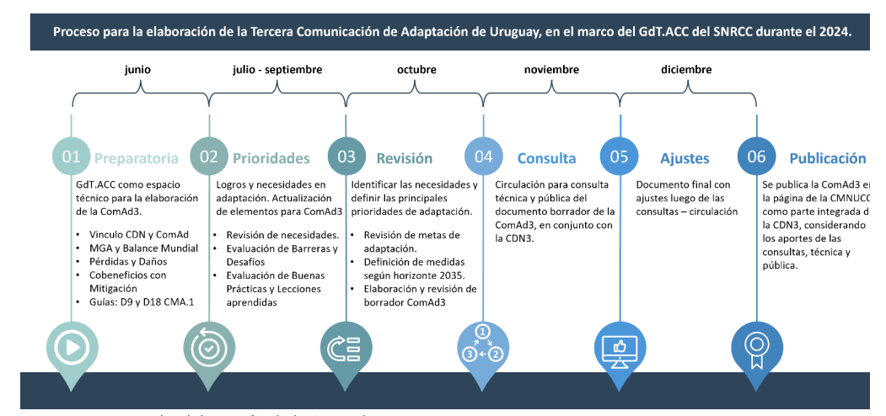
Figure 1: Process of developing ComAd3.
The preparation of ComAd3 resumed the activities carried out for ComAd2, with the significant difference related to the timeframes of each. That is, during the preparation of ComAd2, three years of experience in the application, design, programming, and implementation of the adaptation measures of ComAd1 were available. However, for the preparation of ComAd3, the implementation and monitoring of the adaptation measures of ComAd2 has not yet begun. Nevertheless, it is considered relevant to present the adaptation progress made by Uruguay since the presentation of ComAd2 to the present date, as well as to reaffirm the support needs for the implementation of climate change adaptation.
The process for preparing ComAd2 facilitated the development of ComAd3 in some aspects. The main activities worth highlighting are: Review and Update of adaptation needs, Barriers and Challenges, as well as Good Practices and lessons learned. This was done during an in-person workshop8 with the participation of technical representatives from the adaptation areas9. In addition, several activities were developed virtually, both with the joint vision of the entire group and with bilateral meetings for each area to define potential adaptation measures projected for 2035.
Some areas/sectors promoted sectoral meetings and workshops, such as the Agricultural sector, which held five workshops where input was collected and systematized to address strategic lines and the implementation of actions for climate change adaptation in the sector, along with those related to mitigation. These workshops were carried out jointly with key institutions and actors from the government, academia, the private sector, and organized civil society. As a result, five sectoral roadmaps were developed: agriculture (including rice), forestry, livestock, dairy, fruit and vegetables, and a cross-cutting research and development roadmap for the country's main production systems.
Once the various technical exchanges were completed, a draft document for ComAd3 was prepared, incorporating the input gathered. This draft document was circulated among the members of the Working Group for Adaptation to receive feedback and ensure its validation, for subsequent integration into this CDN3.
4.2. Context of adaptation in UruguayUruguay views climate change adaptation as a national priority. The efforts made in recent decades to strengthen public policies, programs, and specific adaptation measures are confirmed by the most recent actions carried out with a planning and implementation vision, driven by the NDCs, national adaptation plans, and the PCA. The latter, along with ComAd2, are the instruments that summarize the main reasons for prioritizing adaptation [2]:
It is essential to increase capacities for adaptation and resilience in order to reduce risks and moderate the impacts derived from and aggravated by climate change.
It is essential to assess and explain the adaptation efforts made and to plan the necessary actions, in accordance with national capabilities, to strengthen climate action on adaptation and risk reduction.
It is desirable to contribute to strengthening global governance that achieves political parity and the mobilization of financial resources between adaptation and mitigation, so it is considered strategic to direct national efforts toward contributing to the fulfillment of the GGA and the Global Balance Sheet provided for in the Paris Agreement.
Furthermore, it is important to highlight other key reasons why Uruguay considers adaptation a national priority: i) high exposure: due to the dependence on weather conditions, variability, and climate change for the development of its main economic activities; ii) high vulnerability: due to the high sensitivity and susceptibility of the territorial spaces that concentrate the main economic activities and the most vulnerable social sectors and ecosystems; and iii) the still-nascent capacities for response and implementation of adaptation in the face of these evident transformations.
4.2.1. National legal frameworks and institutional arrangements
This section highlights the frameworks and arrangements that contribute to the development of adaptation. Figure 2 presents a timeline of the different policies, plans, and strategies that have strengthened the conditions for adaptation development, as well as materialized efforts for its implementation through the various plans that propose risk reduction, capacity building, and increased resilience.
To effectively implement climate change adaptation, it is necessary to harmonize political and technical frameworks. In Uruguay's case, the PNCC and ComAd1 are the main instruments that achieve this integration. The PNCC establishes the main guidelines that define the areas of action for adaptation, and ComAd1 recognizes national efforts, expresses the needs for adaptation implementation, and, among other tools, provides the basis for the design, formulation, and implementation of National Adaptation Plans. The SNRCC also stands out as a horizontal coordination area, which, by decree, is represented by public institutions, academia, and non-governmental organizations that research and work on climate change issues.
Under the SNRCC umbrella, there are working groups that directly address adaptation, such as the Adaptation Working Group, which has three subgroups: one addressing coastal issues, another focused on cities and infrastructure, and one addressing Climate Services. There are also working groups addressing Loss and Damage, Gender and Education, Communication and Awareness, among others.
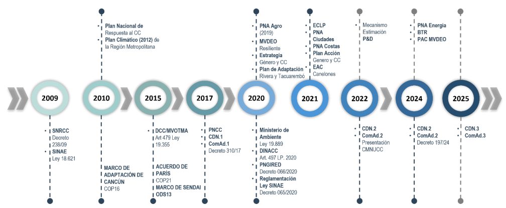
Figure 2: Key Milestones in the Climate Change Adaptation Framework
The PNA-Agro (2019) aims to guide the design, coordination and prioritization of policies, programs and projects that seek to address the climate vulnerabilities of the different agricultural production systems and aims to achieve a paradigm shift towards a resilient development path adapted to climate variability and change in the agricultural sector. [3]
The NAP-Cities (2021) seeks to reduce vulnerability to the effects of climate change by building adaptive and resilient capacities in cities, infrastructure, and urban environments; and to facilitate the integration of adaptation measures seamlessly into new and existing policies, programs, and activities, as well as into city-specific development planning processes and strategies, and for spatial planning. [4]
Similarly, the PNA-Costas (2021) established the following objectives: incorporating an adaptation perspective into the development and implementation of the coastal zone policy framework; strengthening capacities at the national, departmental, and municipal levels related to climate risk management and adaptation in coastal ecosystems through the training of human resources and the financing of specific actions, as appropriate, in terms of budgetary powers at the respective levels of government, promoting the preservation of coastal natural spaces and processes threatened by climate change and variability. It also aims to contribute to sustainable development with an equity perspective, seeking a more resilient, more adapted, and more aware society in the coastal zone. [5]
The main objective of the PNA Energy (2024) is to increase the robustness and resilience of the Uruguayan energy sector in the face of threats associated with climate change, reducing its climate vulnerability so that it can continue to satisfactorily fulfill its essential function of providing the population with quality access to energy and contributing to the country's sustainable development. [6]
Uruguay understands that the climate change adaptation strategy must be adjusted to a comprehensive risk management framework in order to avoid or moderate damage, through the planning, design and implementation of actions, activities, plans, programs and policies that generate the conditions to adjust to the current or projected climate and its effects [7]. Therefore, strategically, Uruguay's efforts are channeled into generating the conditions to increase the adaptive capacities and resilience of social and ecological systems, and in this way be able to reduce the intrinsic vulnerabilities of the systems, in addition to the external factors that aggravate or enhance the magnitude of the impacts.
As expressed in other documents submitted to the UNFCCC, Uruguay is vulnerable to the effects of climate change and variability, both in terms of its main economic activities, which are highly dependent on climate factors, and the location of its main human and infrastructure assets. [2] [8]
Hydroclimatic risks are those that most affect Uruguay, and floods are the most notable for their frequency and the magnitude of the impacts they generate. [9] Since the beginning of 2023 to date, the Uruguayan Institute of Meteorology (INUMET) has issued 1,81511 meteorological warnings12, of which 0.17% correspond to red warnings and 29.31% to orange warnings. Of these warnings, according to information from the National Emergency Directorate of the National Emergency System (SINAE), 16 floods have been recorded nationwide. As of the end of 2023, the National Water Directorate (DINAGUA) of the MA estimates the relative impact of losses and damages caused to homes by the recorded floods. As of the date of preparation of this document, the amount is estimated at around 35 million dollars.
It is important to emphasize that Uruguay is working to collect more, more comprehensive information, focusing on recording impacts and assessing the losses and damages caused; evaluating actions to reduce vulnerability; and evaluating the economic impact of implementing climate change adaptation measures.
4.2.2.2. Climate projections and scenarios for UruguayClimate projections for Uruguay for the 21st century (Figure 3) were based on ten models [10] that accurately represent Uruguay's climate; each model was run for the SSP245, SSP370, and SSP585 scenarios for two time horizons: short-term (2020–2044) and long-term (2075–2099).
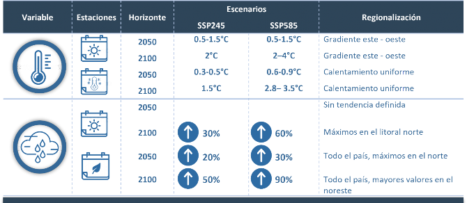
Figure 3: Model projections for temperature (CMIP5) and precipitation (CMIP6) at the seasonal level.
Historical data on average annual temperature for the periods from 1961 to 2014 were analyzed, which show correspondence with the global increase trend [10], where a temperature increase of between 0.5 and 1.5 degrees Celsius is estimated for the medium-term horizon, both for the most moderate Shared Socioeconomic Trajectories (SSP) (SSP245) and the most unfavorable (SSP585) (Figure 3). Regarding precipitation, the differences can be seen at the seasonal level, both summer and winter suggest that rainfall in general would not change significantly, with some regional exceptions17, with autumn being the season that projects an increase in almost the entire territory, for both scenarios.
4.3. Ex ante adaptation cycleArticle 7 of the Paris Agreement establishes the global adaptation objective of enhancing adaptive capacity, strengthening resilience and reducing vulnerability to climate change with a view to contributing to sustainable development and achieving an appropriate adaptation response in the context of the temperature goal mentioned in its Article 2.18. [11].
ComAd2 explored how the country's proposed climate change adaptation actions contribute to the components established in the Global Goal on Adaptation (GGA). This challenge remains present in this communication, aiming to also relate it to the four cross-cutting goals and seven sectoral targets of the Glasgow-Sharm el-Sheik Work Programme on the GGA. [12]
In this sense, the general objectives proposed in ComAd2 are maintained, in addition to the specific objectives for each adaptation area, related to the MACC.
Regarding increasing adaptive capacity:
a) Strengthen information systems for decision-making by generating, incorporating, and improving information, with technical and scientific validation, linked to the consequences of climate change and the implementation of adaptation actions.
Regarding vulnerability reduction:
b) Reduce the impacts of climate change on socio-ecological systems, reducing loss and damage in various productive areas and sectors by implementing climate change adaptation actions.
Regarding strengthening resilience:
c) Strengthen alliances for climate governance, regulatory, planning, and technical instruments, with a cross-cutting approach to climate change, especially adaptation.
As outlined in ComAd2, interdisciplinarity and a multilevel approach are important requirements for addressing climate change. Effective and efficient implementation requires a comprehensive approach that combines strategic planning, plan-aligned implementation, resource mobilization, inclusive participation, and a robust monitoring and evaluation framework. Cooperation between the local, national, and international levels is essential to ensure that adaptation actions are aligned with the specific challenges and opportunities of different local contexts.
While areas or sectors have been defined to better monitor adaptation actions, it is necessary to understand that climate change affects an interconnected system. Changes in one component trigger reactions in others, underscoring the need for a comprehensive and cross-cutting approach to MACC planning and implementation. This comprehensive approach ensures that actions are designed taking into account the interdependencies and dynamics of the entire system. The Intergovernmental Panel on Climate Change (IPCC) highlights the importance of integrated and cross-cutting approaches to addressing the impacts of climate change, emphasizing that adaptation must be a coordinated response that considers the interrelationships between different sectors and systems.
This cross-cutting approach must consider a climate risk framework as a starting point, integrating the generational and gender perspectives with an intersectional approach that recognizes vulnerabilities and respects differential capacities within the framework of human rights. In this regard, as mentioned above, DINACC has been working to incorporate children's perspectives into climate policies by promoting youth participation through the Youth Climate Action initiative. Through this initiative, adolescents and young people have contributed their perspectives to the National Adaptation Plans for the coastal zone and energy, as well as to this ComAd3. To continue this coordination, we will continue to promote the involvement of adolescents and young people in participatory processes related to climate change adaptation.
A cross-cutting approach to adaptation must include actions that increase knowledge, promote awareness and phased adaptation, reduce loss and damage, and foster biodiversity protection alongside ecosystem conservation and restoration. To achieve this, it is essential to incorporate and prioritize nature-based solutions (NBS) as a strategy that combines social and environmental aspects, contributing to climate risk reduction and generating co-benefits with mitigation actions.
National adaptation measures
Uruguay's climate change adaptation strategy, in addition to identifying the needs of each area, also recognizes the progress and efforts made at the national level. These recognitions generate three types of MACCs, which record and promote the continuation of actions that are being implemented and are beneficial to the ACC, in addition to the challenges of implementing new actions.
In addition to the three general objectives, ComAd2 presented 25 specific objectives and 60 adaptation measures distributed across 12 major areas corresponding to the PNCC, taking into account the aforementioned cross-cutting approaches to adaptation.
The implementation of these measures is planned to begin in 2026, with the exception of those measures that provide continuity to adaptation actions that have been implemented since ComAd1. This created a challenge in designing and identifying potential MACCs for ComAd3, since it is not possible to capitalize on responses to the progress and/or effects of ComAd2 measures. Therefore, the exercise consisted of reviewing the relevance of the programmatic lines to which the MACCs refer, and whether it was appropriate to extend the horizon from 2030 to 2035. This evaluation identified characteristics that allowed the MACCs to be classified into 5 groups, according to the type of activity they propose.
The groups are as follows:
G1: Measures that propose a work plan or program limited to a time period, from which it is deduced that once the period established in a ComAd has ended, another plan or program is developed in the next ComAd.
Examples: all measures related to the NAPs and other plans, where the generation of roadmaps or action plans for monitoring and/or implementation is established.
G2: Measures that propose the generation and/or creation of a system, method, or procedure that, in addition to creating it, produces data, information, or knowledge with no apparent end. Therefore, these systems will not be obsolete until otherwise indicated. Examples: All measures established for the generation of information, monitoring, and evaluation of the different components and variables of socionatural systems, as well as the behavior of impact recording and assessment measures, among others.
G3: Measures that achieve an established goal and for which there is known room for expansion to promote similar actions, and therefore require the establishment of new goals or challenges to continue. Examples: Measures related to the development of risk management instruments and tools with partial results, such as the development of EWS or Risk Maps.
G4: Measures that complete the stated objective and/or purpose, and the outcome of the implementation of said measure is necessary to design its successor. Example: Measures that propose the development of a baseline for the study of areas where the impact of climate change is unknown.
G5: Measures reformulated by the representatives of each adaptation area, based on the ComAd2 measures, in which texts, goals or objectives have been reformulated, in accordance with the directions of the parties involved in the implementation and monitoring of the MACC.
According to this categorization, the following list of MACCs for ComAd3 is presented.
To implement the proposed measures, Uruguay may utilize implementation and support resources, including financing, technology transfer, and capacity building and strengthening.
Adaptation measures
Climate Information and Services(relating to Paragraph 7 of the PNCC)
OE1: Strengthen information systems for decision-making, improving available information and knowledge about the risks derived from and exacerbated by climate change, taking into account frequency, severity, and impacts on people, significant assets, and the environment.
By 2035, a geographic information system will be operational that includes the components of the main socio-natural risks likely to be exacerbated by climate change.
By 2035, information and reports on emergencies and the impacts of socio-natural phenomena resulting from climate change and variability will be available in open data format.
By 2035, the existing Climate Services will be expanded and their respective information will be incorporated in open data format.
By 2035, official medium- and long-term climate change projections have been updated within the framework of the SNRCC, based on the best scientific information and available climate change scenarios.
Disaster Risk Reduction(relating to Paragraph 10 of the PNCC)
OE2: Strengthen comprehensive emergency and disaster risk management by incorporating a climate change perspective.
By 2035, the information system for the assessment and multi-risk analysis of socio-natural phenomena affected by climate change has been updated.
By 2035, tools for prospective, corrective, and/or compensatory management of emergency and disaster risks at the national and departmental levels will have been updated.
OE3: Strengthen governance related to knowledge generation and information interoperability regarding risks in Uruguay and associated emergency and disaster events. This involves coordinating, planning, and promoting the production of relevant knowledge and information.
By 2035, at least seven flood-prone cities will have incorporated an early flood warning system, integrated into their response and communication protocol.
Loss and Damage
(relating to Paragraph 10 of the PNCC)
OE4: Strengthen processes for recording, measuring, and evaluating the impacts of adverse climate-related events and their associated impact chains to estimate losses and damages at the national, local, and sectoral levels.
By 2035, annual reports on Loss and Damage will have been generated in accordance with improved mechanisms and procedures for recording, storing, estimating, and displaying losses and damages at the national, local, and sectoral levels caused by climate-related events.
Human Mobility
(relating to Paragraph 8 of the PNCC)
OE5: Understand Uruguay's situation regarding human mobility due to conditions linked to climate change and its resulting impact chains.
By 2035, a strategic plan will be developed to address the effects of climate change on human mobility to, from, and within Uruguay, taking an intersectional approach.
Health
(relating to Paragraph 9 of the PNCC)
OE6: Strengthen and deepen the implementation of actions and targets to improve the health system's response capacity to climate impacts, ensuring the reduction of adverse effects and the protection of vulnerable groups.
By 2035, the Action Plan for the 2031-2035 period of the National Health Adaptation Plan (PNA Salud) has been implemented.
By 2035, a strategy for ongoing monitoring of the impacts of climate change on children and adolescents is being implemented within the framework of the National Plan for Health.
Cities, Infrastructure and Territorial Planning
(relating to Paragraph 11 of the PNCC)
OE7: Monitor and evaluate progress in implementing prioritized adaptation actions and goals for cities and land use planning.
By 2035, the 2031-2035 Five-Year Operational Plan of the National Plan for Adaptation in Cities and Infrastructure (PNA Cities) will be implemented.
OE08: Strengthen social policies linked to the planned relocation of populations vulnerable to climate risks, ensuring access to safe conditions, improving their quality of life, and strengthening adaptive territorial planning.
By 2035, national and departmental policies and instruments for the relocation of homes identified in flood zones will have been strengthened and implemented, assigning new uses to redefine flood zones.
OE9: Deepen the appropriate incorporation of adaptation to climate change and variability into land-use planning instruments, urban planning and management, urban landscape, and building regulations under a climate risk framework, incorporating a nature-based solutions approach.
By 2035, all territorial planning instruments will have incorporated measures for adaptation to climate change and variability and strategies for reducing climate risks.
By 2035, 100% of cities with very high, high, or medium flood risk levels will have maps of riverbank flooding, drainage, and/or sea level rise and storm surge risk.
By 2035, a national inventory of critical urban and building infrastructure will be available, applying various parameters that improve exposure characterization and strengthen risk analysis.
By 2035, the short-term measures of the National Urban Stormwater Plan will be implemented.
By 2035, all urban areas with more than 5,000 inhabitants have incorporated nature-based solutions as a strategy to improve habitat conditions and optimize their climate performance.
By 2035, parameters addressing climate change and variability adaptation have been incorporated into departmental building regulations.
OE10: Promote the generation of financing instruments for the implementation of adaptation actions that improve the resilience of cities to climate change and its effects.
By 2035, a guide will have been promoted and implemented with the different national instruments applicable to financing climate change adaptation actions in new and/or existing urban buildings and infrastructure, and improving their climate resilience.
OE11: Promote the development of sustainable and resilient waste management and recovery infrastructure in the face of climate variability and change that contribute to reducing greenhouse gas emissions.
By 2035, all residential waste disposal sites will be operating under adequate conditions and will have reduced risks associated with climate-related events.
Biodiversity and Ecosystems
(relating to Paragraph 12 of the PNCC)
OE12: Promote the integration of climate change, its effects, and adaptation strategies into planning and regulatory instruments focused on the conservation, protection, and restoration of natural ecosystems, to ensure the provision of goods, services, and ecosystem functions.
By 2035, the National Biodiversity Strategy, the Strategic Plan for the National System of Protected Areas, Marine Spatial Planning, and the Land Degradation Neutrality Strategy incorporate climate change adaptation measures and actions.
By 2035, 100% of Protected Areas will have management plans that incorporate risk analysis and specific actions on climate change adaptation, with their respective monitoring system.
OE13: Incorporate and deepen risk assessment from a climate change perspective and its effects on biodiversity and ecosystems, and increase appreciation of the role of ecosystems in adaptation, for the design of instruments and measures for risk reduction and ecosystem-based adaptation.
By 2035, there will be an assessment of the risks to Uruguayan biodiversity and ecosystems from the short-, medium-, and long-term effects of climate change.
Coastal Zone
(relating to Paragraph 13 of the PNCC)
OE14: Strengthen regulatory and planning instruments for adaptation to climate change and variability in the coastal zone.
By 2035, the 2031-2035 Action Plan of the National Plan for Coastal Zone Adaptation (PNA Costas) will have been implemented.
By 2035, the regulations of Law 19,772, referring to the National Guideline for Territorial Planning and Sustainable Development of the coastal space of the Atlantic Ocean and the Río de la Plata, have been incorporated into the respective local territorial planning instruments, as appropriate.
By 2035, the impact of incorporating climate change adaptation criteria into the EIA and SEA processes in the coastal zone will have been assessed.
OE15: Promote the conservation and vulnerability reduction of coastal areas threatened by climate change and variability through ecosystem-based adaptation measures.
By 2035, the vulnerability of coastal components will have been assessed, where climate change and variability adaptation measures have been implemented.
By 2035, all Coastal Departments will have implemented adaptation measures, promoting the incorporation of NBS in prioritized areas based on climate change risk conditions.
OE16: Implement a monitoring system for the coastal dynamics of the Río de la Plata and the Atlantic Ocean.
By 2035, the coverage area of the monitoring system for meteorological, oceanic, sedimentological, and topological-bathymetric variables of the Río de la Plata and the Atlantic Ocean will have been expanded, reinforcing it in the areas prioritized by their level of risk.
Water Resources
(relating to Paragraph 14 of the PNCC)
OE17: Promote the incorporation of climate change and variability and their effects into integrated water resources management, seeking to improve protection and security in the availability and quality of the resource, promote good practices, improve governance, and promote research and integrated monitoring.
By 2035, 10 integrated watershed and aquifer management plans have been formulated, approved, and are being implemented.
By 2035, the number of water safety plans for drinking water systems will have increased, in addition to increasing sanitation safety plans, considering the conditions related to climate change.
By 2035, an early warning system and response protocols for algal blooms will be developed in priority areas.
OE18: Strengthen hydroclimatic knowledge in watersheds to improve adaptive capacity and risk management with a comprehensive and adaptive approach that promotes the conservation, restoration, and sustainable management of ecosystems and water resources.
By 2035, the instruments, tools, and models for preventing and managing drought risk will have been improved and implemented, in accordance with the National Water Plan.
By 2035, climate risk assessments have been conducted in priority basins, using updated climate projections, to strengthen the design of adaptation measures that promote the conservation, restoration, and sustainable management of ecosystems and water resources.
By 2035, the assessment of climate risks to sedimentary aquifers that supply the population will have been strengthened, with a registry of all hydraulic works (wells) and projections of supply areas.
By 2035, the implementation of protection perimeters for human supply wells in the country's main sedimentary aquifers was incorporated.
Agricultural
(relating to Paragraph 15 of the PNCC)
OE19: Monitor and evaluate progress in implementing prioritized adaptation actions and targets for agriculture.
By 2035, the implementation of the National Adaptation Plan in the agricultural sector (PNA-Agro) will be monitored, reported, and periodically reviewed.
By 2035, comprehensive insurance and other climate risk transfer instruments for the agricultural sector will be implemented, tailored to the context, dynamics, and specific needs of each sector.
OE20: Promote the implementation of good practices in different agricultural activities and processes as a strategy for adapting to climate change, maintaining production, increasing resilience, and reducing risks in agriculture and the environment.
By 2035, promotion and incentive instruments will have been designed and implemented to ensure that productive establishments implement management measures and technologies that reduce the risk of water shortages.
By 2035, there will be an information platform that facilitates access to new knowledge in accessible and appropriate formats for adaptive agricultural management in the face of climate change and variability.
By 2035, management measures and technologies to reduce heat stress in animals will be gradually incorporated on agricultural establishments, with the goal of reaching 70% of establishments with at least one measure incorporated.
By 2035, the extension and transfer of technology in horticulture and fruit growing will have been strengthened, incorporating a gender and generational perspective.
By 2035, R&D&I will be strengthened to validate advanced protection and infrastructure technologies that prevent the impacts of climate change and variability on fruit and vegetable production.
By 2035, sustainable and resilient production in the fruit and vegetable sector will be promoted synergistically with other policies through the incorporation of agroecological practices.
OE21: Promote the development and implementation of adaptation measures that have synergies, parallels, and co-benefits with climate change mitigation.
By 2035, 100% of the 2012 native forest area will be maintained, with the option to increase it by 5%, subject to the availability of resources, seeking to reverse the degradation processes, and preserving the
Ecological integrity, particularly in water resource environmental protection zones, within the framework of the provisions of the Forestry Law.
By 2035, rice production will have gradually incorporated strategic drainage technologies, while monitoring their impact on productivity.
By 2035, land use and management plans will continue to be strengthened so that the area affected by the regulations improves its productivity, its capacity to store water and conserve organic carbon, and reduces the risk of water erosion.
By 2035, the incorporation of good effluent management and nutrient circularity practices in agricultural establishments is encouraged.
By 2035, the diversification and combination of crops in horticultural systems will be promoted to improve adaptation to climate change.
By 2035, the planting of forests for shade and shelter in agricultural establishments has increased or been maintained, including the use of native species.
By 2035, the adoption of good practices for natural field and herd management in livestock farming has been promoted and strengthened, contributing to improving farm productivity, reducing emissions intensity, increasing adaptive capacity, and conserving biodiversity.
Energy
(relating to Paragraphs 18 and 20 of the PNCC)
OE22: Strengthen energy planning instruments by incorporating adaptation to climate change and variability, improving the resilience and adaptive capacity of the system and infrastructure.
By 2035, the 2031-2035 Action Plan of the National Energy Adaptation Plan (PNA Energía) will be implemented.
OE23: Identify and assess energy system risks in energy generation, transmission, and distribution, as well as improve the resilience of current and future energy infrastructure to climate change.
By 2035, an assessment system has been implemented that includes a climate risk assessment for critical infrastructure, and adaptation and risk reduction measures have begun.
Tourism
(relating to Paragraph 19 of the PNCC)
OE24: Promote research and risk assessment of the effects of climate change on tourism to improve the design of adaptation actions to be implemented in medium- and long-term scenarios.
By 2035, new climate risk analyses will have been conducted for tourism products, considering the trends determined by updated climate projections agreed upon within the SNRCC framework.
OE25: Promote the generation of and access to climate-relevant information for decision-making by institutions and the public.
By 2035, the use of tourist information systems that incorporate weather and emergency alerts will have expanded to major tourist locations.
In addition to what was presented at ComAd2, the main advances in planning, design, and implementation of climate change adaptation actions are highlighted below.
4.4.1. First Nationally Determined Contribution and first Adaptation Communication.
The decision to include the first adaptation communication in the first NDC is noteworthy. This, in addition to highlighting the message that Uruguay is a country affected by climate change and needs support for the implementation of adaptation actions to reduce the risks inherent to climate change, provides greater visibility to adaptation and its balance with mitigation. Furthermore, it highlights Uruguay's adaptation efforts and helps to better understand and recognize achievements, good practices, needs, barriers, and challenges.
The creation of a monitoring and reporting system for progress on adaptation commitments is noteworthy, promoting transparency in tracking the implementation of the different measures and demonstrating the needs, efforts, and commitment of institutional technical teams. In this regard, progress in the implementation of the measures is being monitored annually. Not all measures show the same level of progress due to the type of measure or the technical, political, and financial resources necessary to promote and develop them. However, progress over time can be seen (Figure 4) in the number of measures being implemented and that have achieved the proposed goal, compared to those that have not yet been implemented.
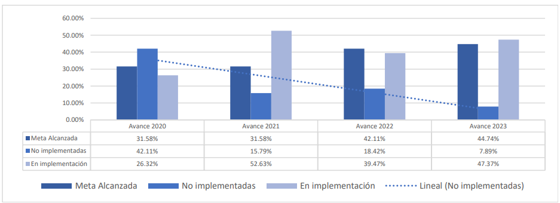
Figure 4: Progress in the implementation of MACC of ComAd1.
Inclusion of the Gender component in the adaptation measures of the CRC1:
Regarding the gender component, the annual categorization adjustment allows for a progressive shift toward responsive measures. This monitoring reflects the awareness-raising process that the MACCs have undertaken to identify actions that incorporate or promote gender equity. This can be seen in Figure 5, given that the "responsive" category reflects the inclusion of effective gender actions.
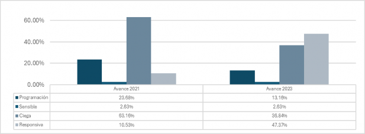
Figure 5: Evolution of the incorporation of MACCs in relation to the category of gender-responsive measures.
4.4.2 National Adaptation Plan for the Coastal Zone (PNA - Costas)
Uruguay drew on and learned from global and regional coastal zone vulnerability, risk, and adaptation assessment systems to increase the level of detail in its national information system to directly inform decision-making processes regarding adaptation prioritization and strategies. The successful adoption of climate modeling technology has not only enabled Uruguay to develop its NAP-Coasts, but also to enhance its capacity and secure financing for the implementation of adaptation measures. Therefore, the adoption of new technological developments has directly led to the achievement of two of the country's key NDC1 adaptation objectives.For a period of fifteen years (2009–2024), the PNA-Costas (National Plan for Coastal Development) has maintained various consultation and training strategies for local governments in the coastal zone of the Río de la Plata and the Atlantic Ocean. To date, evidence indicates that adaptation planning at the national level is stimulating adaptation planning at the departmental level, as both adaptation funding and the number of adaptation projects supported by national, departmental, and multilateral funds have increased (Figure 6). The PNA-Costas is conceived as a working method that recognizes all priorities related to climate variability and change throughout decision-making processes. In this sense, this mechanism aims to cover all the structures necessary to generate the knowledge that will be applied at the time of strategic planning.
The main advances of the NAP-Costas can be identified in some approaches, namely: (i) coordination between administrations and integration of competences beyond sectoral fragmentation, (ii) cross-border cooperation in addressing common problems between subnational governments, (iii) long-term vision and adaptive management approach, (iv) provision of a general framework that can be directed to local specificities and different scales (from national to local).
The NAP-Coasts focused its strategy on developing twelve proposals for the implementation of adaptation measures at the local level. Each of the six subnational governments, in coordination with the Ministry of Environment and Natural Resources, defined the area of action considered vulnerable in the coastal risk assessment. A local-level working group was established, existing information was reviewed and systematized, and the preliminary draft for the implementation of adaptation measures was designed. These preliminary drafts were developed by academics, national and subnational government technicians, and managers with jurisdiction in the coastal zone. These dialogues demonstrate that the urgent and necessary action to adapt to climate change must be based on solutions centered on the best available knowledge in the country, supported by knowledge sharing between the national and subnational levels and empowerment for local action.
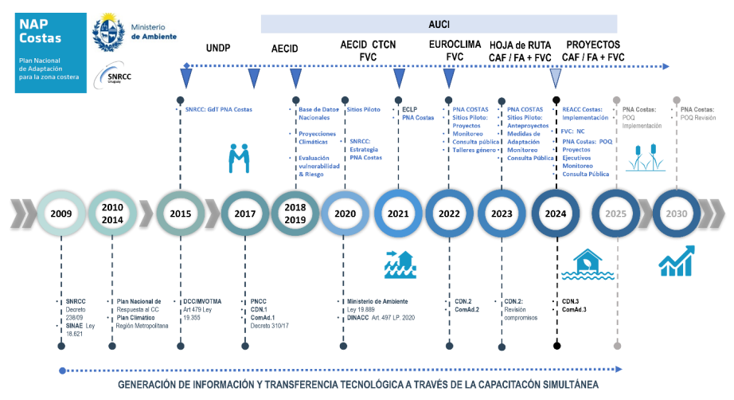
Figure 6: Main milestones of the National Coastal Zone Adaptation Plan in Uruguay. The dotted line above shows the moments in which international cooperation funds were accessed. 19
To ensure the long-term sustainability of climate modeling and vulnerability assessment technology adoption, Uruguay developed shared ownership platforms (National Environmental Observatory) and a remote monitoring system for coastline monitoring to ensure the exchange of information and knowledge among all levels of government and between academic and civil society networks. This monitoring system simultaneously processes satellite images, fixed camera footage, and photographs obtained through citizen monitoring20. This provides a biannual assessment of the coastline position in vulnerable beach arcs, where a battery of recommended adaptation measures already exists.
4.4.3. National Energy Adaptation Plan (PNA - Energy)
The recently approved National Energy Sector Adaptation Plan (PNA-E) seeks to improve the adaptive capacity of the Uruguayan energy system, strengthen its resilience, and reduce its vulnerability to climate threats. These aspects are key to ensuring a secure, resilient, and quality energy supply for the entire population, addressing the three axes of the "energy trilemma" [13] in a context of growing climate crisis.
This Plan was designed as a dynamic and flexible strategy, capable of responding not only to the uncertainty associated with climate change, but also to the technological and socioeconomic changes that could transform the energy sector in the future. It was developed through a participatory process involving a broad spectrum of technicians, experts, and key stakeholders from the country's energy ecosystem, seeking to ensure that the diverse perspectives and knowledge of the sector were integrated.
At the beginning of implementation, the enabling conditions necessary for the adaptation of the energy sector are being developed, with efforts focused on strengthening the Plan's governance, ensuring adequate coordination between the various institutions and stakeholders involved, as well as the effective integration of the technical teams that will work on its implementation, in order to consolidate the Plan's institutionality. Shortly after its approval, the Steering Committee, composed of representatives from the Ministry of Energy and Mines (MIEM) and the national energy companies ANCAP and UTE, began its meetings.
The actions to be developed in this phase of the PNA-E focus on two key areas. The first is the identification and detailed assessment of the energy sector's climate vulnerabilities, considering infrastructure, technological, social, environmental, and other factors. This is a priority area for strengthening climate impact information systems, which are essential for decision-making. This assessment will be key to prioritizing future interventions, taking into account the potential impact of each possible measure.
The second area of action focuses on creating a robust Monitoring, Evaluation, and Learning (MEL) system, which is essential to ensuring the effectiveness of the NAP-E over time. This system will allow for continuous assessment of the impact of the measures adopted, adjustments made as needed, and lessons learned from lessons learned, ensuring continuous improvement in the Plan's implementation.
Furthermore, with the ongoing goal of capacity building and raising awareness among the population, youth-oriented activities have been carried out in collaboration with UNICEF, targeting young people and adolescents. The main objective of these workshops was to raise awareness among younger generations about the impacts of climate change on the energy sector and how these impacts affect their daily lives and their future, including the perspective of future generations in decisions that will affect the country's development in the coming decades.
In short, the NAP-E is not only a necessary response to climate challenges, but also a fundamental tool for ensuring a secure, resilient energy sector prepared to face the climate challenges of the future.
4.4.4. Project: Technology and modeling for integrated water management as an adaptation to climate change for Uruguay's main source of drinking water.
This project's specific objective was to adopt technology and modeling in the management of water resources in the Santa Lucía River basin and strengthen its governance from a rights-based perspective, to support decision-making and the formulation of public policies from an integrated management perspective.
The project contributed to strengthening the resilience of Montevideo and its Metropolitan Area, as well as the urban areas of the Santa Lucía River basin, through the fulfillment of the objectives, results and actions designed22 in addition to contributing to the implementation of the Santa Lucía River Basin Plan23. It contributed to the development of an operational hydrological system that incorporates hydrological, atmospheric, management and water quality models developed in the basin that contribute to the evaluation and forecasting and early warning of floods. Continuous precipitation and water quality measurement equipment was installed at strategic sites in the basin, enabling improved data collection and strengthening water resource monitoring and management capacity.
The collaboration between the MA, Inumet, the University of the Republic (UdelaR), the MGAP, the OSE, and the Dutch Deltares Institute enabled the development of hydrological, water quality, and management models, as well as the evaluation of scenarios for water planning.
These models were incorporated into an operational hydrological system and are essential for improving knowledge of the Santa Lucía River basin, providing valuable information on both water quantity and quality, which in turn facilitates informed decision-making for sustainable water risk management (droughts and floods).
Likewise, these developments contribute to the assessment, forecasting, and early warning of extreme hydrological events; information that is evaluated by DINAGUA and sent to SINAE and the Departmental Emergency Coordination Centers (CECOED) located within the basin.
Regarding strengthening basin governance, the technical secretariat of the Santa Lucía River Basin Commission received support in sessions and working groups on topics such as strengthening participation, water for sustainable development, communication and education, and water risk management. A communications strategy was designed and implemented, disseminating project progress through available platforms, producing videos, holding contests with children and young people in the context of World Water Day, and disseminating materials for the basin plan and the basin commission, as well as educational materials.
Two demonstration pilots were carried out: one for determining protection perimeters for drinking water supply wells and another for participatory hydrometeorological monitoring. For the well protection perimeter pilot, studies and educational outreach workshops were conducted. For the participatory hydrometeorological monitoring pilot, four sites were installed for photographic reporting of water levels and rain gauges. In addition, theoretical and practical outreach workshops were held with local stakeholders and in educational centers.
In terms of knowledge management, we participated in events and training sessions that strengthened the technical team and disseminated project progress. Two editions of the Mercociudades Urban Resilience School were held, focusing on water resource management, with the participation of representatives from local governments and 16 cities in the region. [14]
4.4.5. National Adaptation Plan for the Agricultural Sector (PNA - Agro)
In recent years, the Ministry of Agriculture, Livestock and Livestock (MGAP) has promoted various innovative projects aimed at the sustainable development of the agricultural sector, in line with the strategic guidelines of the National Agricultural Development Plan (PNA Agro). One of the most notable advances has been the expansion of the Livestock and Climate project, which began with a co-innovation approach to livestock practices and is now being scaled up with support from the European Union, maintaining its original principles of climate-smart practices. In the area of environmental monitoring, work has been done to develop the Drought Information and Monitoring System (SISSA), which includes a team focused on assessing the vulnerabilities of the agricultural sector to drought events. As a result, technical notes have been generated on the impact of drought on crops such as soybeans and on the management of the recent water deficit at the national level.
Likewise, an NDVI-indexed insurance policy has been developed in conjunction with an international reinsurer, aimed at mitigating the effects of drought on beef cattle farming for family farmers. This product is aligned with the commitments of the National Plan for Family Farming 2024-2028 and is based on a pilot test conducted years ago with the support of the World Bank. In the social sphere, a program has been implemented to improve inclusion and develop digital skills among rural women, promoting access to technology in the agricultural sector.
Another important advance has been the creation of a damage and loss monitoring mechanism in collaboration with SINAE (National Institute of Agricultural and Forestry), which allows for the definition and automation of damage reporting in traditionally rainfed agriculture. This has also enabled Uruguay to report this data to the Sendai Framework for Disaster Risk Management. This system is expected to be applied to livestock farming and, in the future, to forestry. Furthermore, the MGAP (Ministry of Agriculture and Livestock) has reviewed and updated the National Sustainable Bioeconomy Strategy, accompanying it with a soon-to-be-published action plan, as part of the country's commitment to the circular economy and sustainability. In line with the measurement of environmental impacts, the first version of the Agricultural and Economic Environmental Account was compiled, with results updated through 2020, which represents a significant advance in quantifying the sector's environmental impact.
4.4.6. National Adaptation Plan for Cities (PNA - Cities)
The PNA Cities is a strategic tool that designs, through its various strategic lines, actions and activities that will allow progress in the environmental and social planning policies and processes carried out by Uruguay in relation to cities, considering the impacts of climate change and highlighting those ecosystem services that are fundamental for adaptation. [4]
It is necessary to emphasize Uruguay's need for access to cooperation, especially climate action financing, for the proper implementation of the Cities NAP. The strategic lines of this NAP seek to increase the resilience of urban areas and the country's critical infrastructure to the risks of climate change. Support through climate finance mechanisms and international technical cooperation is essential to ensure that the planned actions are implemented effectively, contributing to sustainable development that is resilient to climate change.
In this regard, in addition to the progress made by the PNA Cities during its formulation stage,24 the progress achieved through synergy with other projects funded through international cooperation and implemented in urban areas in the country stands out. Among these, the following stand out:
4.4.6.1. Regional Project between Uruguay and Argentina: Adaptation to Climate Change in Vulnerable Coastal Cities and Ecosystems of the Uruguay River.
The Uruguay-Argentina Regional Project: Climate Change Adaptation in Vulnerable Coastal Cities and Ecosystems of the Uruguay River25 is an instrument that links adaptation planning and implementation. Many of its activities were designed during the process of developing the Cities NAP and not only contribute to the implementation of the NAP, but are also in line with the measures proposed in ComAd1, especially in the areas of Disaster Risk Reduction, Biodiversity and Ecosystems, Cities and Infrastructure, and the Social area.
The project consists of four components, with five outcomes and 16 products that address actions such as: the diagnosis and restoration of key ecosystems for adaptation; the strengthening of networks in the territory to increase resilience in vulnerable communities; and the redefinition of land located in high-risk flood zones through the creation of public parks. The localities north of the Uruguay River reached by the project are: Bella Unión City, Rincón de Franquía Protected Area (Artigas), Salto City (Salto), Paysandú City (Paysandú), Fray Bentos, San Javier, Nuevo Berlín, and the Esteros de Farrapos and Islands of the Uruguay River Protected Area (Río Negro).
Some of the achievements reached with the implementation of the project are: 1) Recommendations were made for the incorporation of Climate Change into the Fray Bentos PLOT; 2) Inputs were generated for updating flood risk maps and incorporating the climate change variable in the localities of Bella Unión, Salto, Paysandú, San Javier, Nuevo Berlín and Fray Bentos; 3) The housing complex in the Esmeralda neighborhood in Fray Bentos was redefined; 4) Emergency response protocols were updated in the departments of Salto, Paysandú, Río Negro and Artigas, thereby strengthening local emergency response capacities; 5) A protocol proposal was developed for the consolidation of the Uruguay River Flood EWS, strengthening governance and inter-institutional coordination for the exchange of information that reduces the impacts of adverse events; 6) The management plan for the Esteros de Farrapos and Islands of the Uruguay River National Park was updated, as well as the management plan for the Rincón de Franquía Habitat and/or Species Management Area.
Activities were also carried out to improve the knowledge and awareness of the local population and stakeholders regarding climate change, its impacts, and opportunities for incorporating climate change adaptation as a common practice. Some of these activities included the exchange of experiences and good practices in relation to risk management and the strengthening of governance and inter-institutional coordination of early warning systems on the coasts of the Uruguay River. A course entitled "Climate Adaptation with Land Policies in Vulnerable Coastal Territories of the Uruguay River" was held. In addition, several talks and discussions took place26, which included topics such as: "Social Vulnerabilities. Disaster Risk Analysis Methodology"; "Local Territories, Shared Risks: Towards Regional Disaster Management"; "Climate Change Scenarios in the Uruguay River Region," "Resilient Communities: Local Capacities for Adapting to Climate Change," "Water Quality Management," and "Nature-Based Solutions in Urban Spaces," among others.
The activities encouraged the participation of various local social representatives, departmental and national officials, civil society, academia, and citizens, also promoting gender and generational representation.
National Urban Rainwater Plan (PNAPU).
The PNAPU27 lays the foundations for the future management of urban stormwater throughout the country, addressing both the aspects of flood risk reduction and the opportunities that the presence of water provides in terms of territorial development and socio-urban integration.
The main objective of the Plan is to establish a strategy for managing rainwater contributions to all cities in the country, in order to provide a level of service that includes an adequate and reasonable standard of protection against flooding, minimizes the contribution of pollutants to urban waterways and promotes the integration, consolidation and enhancement of the presence of water and the services it provides in cities. The PNAPU covers all urban areas in Uruguay, constituting a universe of 554 localities, with 42 localities with more than 10,000 inhabitants.
One of the conceptual pillars of the Plan is the adoption of NBS for urban stormwater management under a hybrid implementation concept with other traditional, so-called gray infrastructure. The term NBS is adopted as a broader concept, transcending the adoption of sustainable drainage measures (SUDS) to also encompass the restoration and renaturalization of waterways.
The proposed diagnosis identifies the main problems and opportunities at the national level. It is organized according to three management axes (sectoral, water management, and governance), which allows for their identification, formulation, and future institutional approach.
The proposal presents 16 strategic lines and 35 actions. The strategic lines will allow the stated objectives to be met and, together, achieve the proposed vision. The lines of action constitute programs and express the need for an action, study, or product that must be developed as part of the plan's implementation.
Some of the lines of action proposed by the PNAPU are: intervention protocols and/or procedural guides; construction projects; master plans; studies; regulatory modifications; methodological guidelines and recommendations for good practices; institutional strengthening strategies; and communication and participation actions.
The main challenges facing the implementation process, the roadmap, and the criteria for prioritizing development actions and programs are also developed. It is presented within an adaptive planning framework consisting of a proposal of possible future scenarios, low-regret interventions, and milestones for decision-making.
Project: Nature 4 Cities28 (N4C).
The N4C project29 in Uruguay was implemented in the cities of Rivera and Durazno. Several criteria were considered for its selection, such as vulnerability and adaptive capacities, among others. Various documents were used, such as the SINAE Risk Atlas of Uruguay, the DINAGUA Flood Risk Atlas, and studies carried out within the framework of the PNA Cities and Coasts, such as climate projections prepared within the framework of the PNA for the coastal zone. This process identified floods, droughts, and extreme temperatures as the main climate threats to which urban areas in Uruguay are exposed.
The N4C structure corresponds to regional guidelines and specific products with a national scope and specific to the project locations. The most relevant activities include: a) the preparation of risk analyses considering the climate scenarios and projections component; b) an urban adaptation planning proposal that includes the identification of a portfolio of NbS adaptation measures; c) the development of a financial guide to support investment in climate actions with a focus on urban value recovery instruments, including a cost-efficiency analysis for two prioritized NbS measures; d) a proposal for private sector engagement linked to the identified financing measures and instruments; and the design of an urban NbS concept note that aims to replicate and scale the N4C project results in other locations.
The achievements made through these activities contribute to some of the goals set forth in ComAd1, particularly those related to the areas of Disaster Risk Reduction, Biodiversity and Ecosystems, Cities and Infrastructure, and the Social Area, as well as the five strategic lines of the PNA for Cities. It also allows for progress with some of the measures proposed in ComAd2, which states that by 2030, "all departments will have incorporated, in at least one urban area, ecosystem-based adaptation as a strategy to improve habitat conditions in urban environments and optimize their climate performance."
In addition, activities were included to improve knowledge and training on NBS opportunities in urban areas. These activities included exchanges with citizens and local government members through training workshops, the development of a community of practices, and the creation of a platform for developing a massive open online course on NBS for resilient cities in Latin America and the Caribbean. Courses on climate finance and action in cities were also taught and facilitated, and digital resources were generated related to the role of the private sector in adaptation processes and its connection to NBS.
All activities carried out within the framework of N4C were co-created with various local representatives integrated into a working group with representatives from departmental, national, academic, and non-governmental organizations and civil society organizations involved in environmental, climate, and urban and territorial planning issues. Additionally, the activities were coordinated with the city adaptation group that operates within the SNRCC.
4.4.6.4. Project: Identifying Adaptation Measures in Cities: Citizen Participation as a Driver of Change and Resilience.
This initiative consisted of developing concrete and applicable proposals to increase the resilience of the cities of Durazno and Rivera to heat waves and floods. The initiative's lines of action focused on promoting local awareness and participation, increasing the knowledge and involvement of local stakeholders in the design of MACCs; and promoting MACCs, identifying and developing specific local strategies that are practical, effective, and replicable, studying their technical feasibility using existing capacities in the region.
Two features of this proposal's development are worth highlighting. The first is linked to an open call involving the direct participation of local communities in the development of MACCs in their own territories, including working groups linked to academia, civil society, and departmental governments. The second is linked to the call that allowed for the design of innovative technological prototypes covering a wide variety of adaptation actions, which included both NbS and more traditional measures, as well as monitoring systems for both micro-scale environmental variables and proposed systems to measure the impact of the MACCs themselves.
Additionally, awareness-raising workshops were held to train university students and faculty, entrepreneurs, and representatives of civil society organizations on climate change risk issues and adaptation measures in cities, fostering a practical and participatory approach. It is important to note that these types of activities contribute to developing the enabling conditions for climate change adaptation at the level of local actors, which facilitates the future implementation of adaptation measures.
Project: Urban actions for the sustainable recovery of Uruguayan cities.
Its overall objective was to promote actions aimed at improving the quality of urban public spaces by incorporating nature-based solutions, strengthening tree management and planning, and redefining unused public spaces. Integrating and promoting urban and peri-urban agriculture based on agroecology, all in order to strengthen the resilience of cities to the effects of climate change. Three components were developed: tree management and urban green areas; the incorporation of community gardens; and the design of projects for the recovery, redevelopment, redefinition, and greening of urban public spaces. The project was implemented in the towns of San José de Mayo (San José), Maldonado (Maldonado), and Fray Bentos (Río Negro).
Under the Urban Tree and Green Area Management component, inventories of public trees and a guide for developing tree and green space ordinances were promoted. The garden component implemented three agroecologically based community gardens, encouraging the participation and training of various social groups. Within the public space recovery component, three projects were designed, one per locality, focused on urban recovery and greening of public spaces, considering the use and application of nature-based solutions as a strategy for designing adaptation measures and reducing the identified risks.The project's activities promoted information generation and strengthened the adaptive capacities of local governments and communities through the creation of exchange networks. Workshops were developed to increase community awareness about the impacts of climate change and how to adopt adaptation measures to reduce adverse effects. They also promoted community involvement in defining needs for the design of preliminary projects to reduce local climate risks.
4.4.7. Gender and Climate Change Plan
Within the framework of the Gender in Climate Change Plan implemented starting in 2021, a series of adaptation-related measures were implemented in priority areas such as knowledge generation and capacity building among key stakeholders, allowing for a better understanding of the link between gender and climate change. This component generated gender analysis actions that allow for the recognition of existing inequalities at the sectoral and/or territorial levels, as well as educational resources for various audiences.
Activities were developed to strengthen coordination with the National Gender Council through the National Institute for Women. Within this framework, training, consultation sessions, gender analysis, and coordination were provided for defining gender measures in specific territories, within the framework of the National National Plan for the Coast.
Second Nationally Determined Contribution and second Adaptation Communication.
NDC2 was submitted to the UNFCCC in December 2022, and just as NDC1 included ComAd1, NDC2 was the vehicle for submitting ComAd2. [10] In line with what was expressed in section 4.1.2 on the Main activities carried out, the implementation and/or monitoring of the proposal made in ComAd2 has not yet begun. However, three important elements defined in ComAd2 are worth highlighting: 1) It gives continuity to the actions that have been developed since ComAd1, denoting the relevance of the MACCs in the face of the challenges posed. 2) It increases the challenge by recognizing the need to implement more actions for each area and/or adaptation sector; and 3) It proposes a qualitative methodology on the contribution of the MACCs to the components of the GGA. (Figure 7)
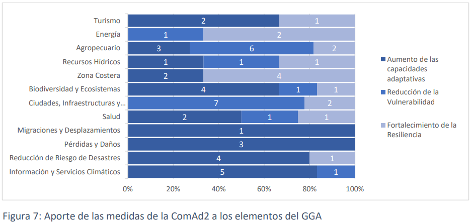
Figure 7: Contribution of ComAd2 measurements to GGA elements
The importance of presenting progress in adaptation implementation and highlighting Uruguay's efforts to achieve greater transparency and communication at the national and international levels, as well as to strengthen access to financial resources, technical support, and technology transfers, is recognized. The goal is also to ensure that these efforts are recognized within the global adaptation framework and the global stocktake. In this regard, a review of the efforts presented at ComAd2 was conducted, and the importance of the efforts highlighted for recognition is ratified (Figure 8). These actions, beyond their potential contribution to the GGA, strengthen adaptive capacities, reduce vulnerability, and promote sustainable and equitable development that integrates the conservation of ecosystems and natural resources.
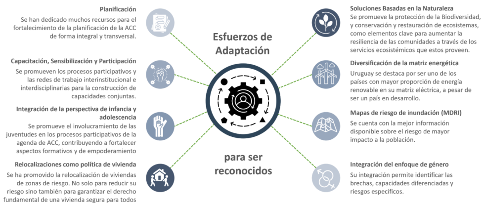
Figure 8: Adaptation efforts to be recognized
4.6 Barriers and challenges to implementing adaptationIn ComAd2, workshops were held to identify the main barriers and challenges to adaptation implementation. The published results are consistent with various UNFCCC and IPCC reports and guidance and are also considered timeless. During the development phase of ComAd3, the relevance of previously published barriers and challenges was reviewed, as well as new inputs were identified.
In this sense, it is emphasized that the main barriers and challenges that Uruguay faces in the implementation and development of climate change adaptation are influenced by economic, institutional, technical, social and cultural factors (Figure 9).
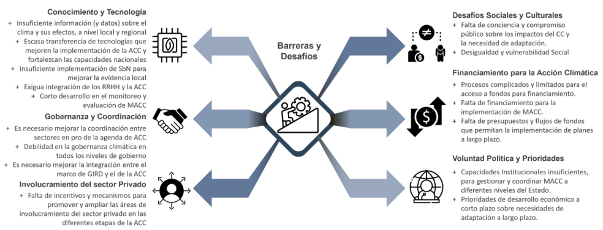
Figure 9: Main barriers and challenges to climate change adaptation.
Economic/Financial Constraints: Although Uruguay has made enormous efforts to unilaterally address climate change adaptation, it relies heavily on international financing to implement adaptation actions. The limited availability of non-reimbursable and concessional financing limits the capacity to implement large-scale adaptive measures. This situation often results in a lack of stability in the provision of long-term financing, which affects the implementation of adaptation actions in the country.
Institutional Challenges: Institutional and technical capacity needs to be improved. Uruguay has made progress in creating climate action structures, such as the SNRCC, the MA, and the DINACC, but the operational capacity of its institutions, together with departmental governments, needs to be strengthened to effectively coordinate the implementation of the MACCs. Furthermore, the adaptation strategy needs to be strengthened from an intersectoral perspective, primarily due to the impact of the use and impact on natural resources.
Knowledge Management Challenges: Significant progress has been made in developing climate information for Uruguay, but there is a lack of specific and detailed climate data at the local scale, which hampers accurate risk assessment, population exposure (including age disaggregation), and the design of local MACCs. There is a growing demand to strengthen local capacities to implement innovative technologies and science-based approaches that enable more efficient adaptation.
In this context, NBS represent innovative, effective, and scientifically validated technological adaptation strategies aimed at reducing climate risk and increasing community resilience. Despite this, experience implementing these strategies in our country is still incipient. This poses the challenge of increasing knowledge and awareness of the importance and usefulness of NBS among technical and decision-making groups, as well as among the general population, thus promoting and strengthening their wider application at the national level.
Another important challenge in knowledge management relates to the quantity and quality of water resources, especially under adverse climatic conditions, both in terms of excess and deficit. Water is a fundamental and cross-sectoral component of all national climate planning and implementation. Changes in precipitation patterns, their intensity and extremes, in addition to the corresponding changes in runoff to receiving bodies, present the challenge of not only maintaining but also improving water security conditions in the cross-sector planning and implementation processes of development projects. This also entails improving knowledge about the implications of climate change on groundwater resources. The water contained in aquifers is a vital natural resource for the supply of drinking water, both for human consumption and for the maintenance of aquatic ecosystems and contributing to ecological stability. Excessive exploitation can lead to aquifer depletion. While this is related to human activity, climate change can alter aquifer recharge and affect the amount of groundwater available. Changes in rainfall patterns, higher temperatures, and increased evapotranspiration can reduce the amount of water infiltrating into aquifers, directly affecting their availability.
Other aspects related to knowledge barriers address the difficulty of accurately modeling climate projections at the local level, recording and quantifying present and future impacts, and the possibility of quantitative and qualitative measurement of the success of short- and long-term adaptation interventions.
On the other hand, although the Diagnosis of Social Perception of Impact and Responses to Climate Change concludes that the population almost entirely recognizes climate change as a global problem of great or quite importance (94%), it is public knowledge (FACTUM surveys on public perception of the most urgent problems for the majority of the population) that adaptation and mitigation to climate change are not issues on which citizen concern spontaneously arises. This doesn't match the severity of the situation the country faces in the medium and long term, and to achieve this, it's necessary to implement training, awareness-raising, and communication strategies that highlight how this crisis affects us on a daily basis and how we can better prepare.
In this sense, each strategy must be tailored to the necessary approaches and its target audiences, focusing activities on providing the available knowledge to improve decision-making tools. Likewise, maintaining and deepening awareness-raising and training opportunities among different groups in society, with an emphasis on the participation of adolescents and young people, is key to understanding current and future climate scenarios and being prepared to support the implementation of goals and decisions.
There are also challenges to improving governance and coordination; adaptation to climate change requires cooperation across different sectors and levels of government. Uruguay is still working to strengthen climate governance and improve synergies between institutions to ensure a coherent and efficient approach to policy development and implementation. It is important to continue improving the strategic vision of climate governance with the necessary investment for the sustained implementation of MACC.
Climate policies face the challenge of generating, adjusting, and/or incorporating additional incentive programs for private sector investment that motivate them to participate in the financing and development of adaptation measures. While there are economic and regulatory instruments that can be used to promote MACC (mainly for urban areas, such as the development of local development plans, territorial planning instruments, land use regulations, construction permits, among others) and that can enable the leveraging of private investment to finance adaptation, there is insufficient information on the use of these tools, their respective impact, and their potential for replication and scaling up.
Along these lines, there are tax exemptions under the Investment Promotion Law, which grants higher scores in the indicators to proposals that include MACC and clean technologies. However, only actions corresponding to the agricultural sector (water management projects, installation of shelterbelts and shade forests, among others) are recorded. 30
The challenge is to extend its application and transversality to all areas and/or sectors linked to adaptation. Identifying the needs, barriers, and challenges that hinder adaptation is a fundamental step in formulating effective measures. Figure 10 shows the main needs related to these adaptation barriers. Not all needs can be defined as MACCs, but they have the potential to generate enabling or sustaining conditions for MACCs. These actions, whether direct or indirect, seek to facilitate implementation and ensure the long-term sustainability of MACCs. In this sense, overcoming the identified barriers becomes a key enabler for building resilience to climate impacts. [15].
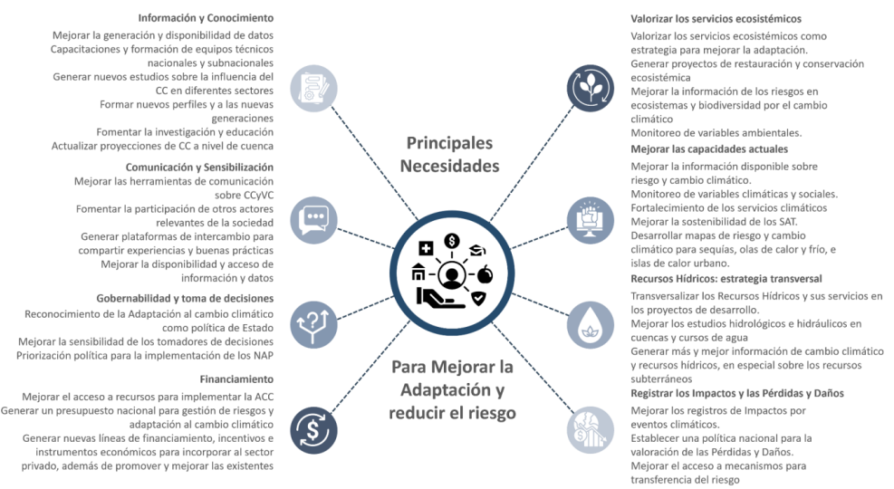
Figure 10: Key needs for improving adaptation and reducing risk
4.7 Good practices and lessons learnedThe identification, documentation, and replicability of good practices in climate change adaptation are essential to accelerate and improve responses to climate impacts globally. By capturing both positive and negative lessons learned, more robust strategies can be developed, tailored to different socioeconomic and geographic contexts. Recording these lessons allows successful experiences to be adapted and applied in new environments, maximizing resource use and improving resilience at the local and global levels. Furthermore, learning from less successful experiences helps avoid past mistakes and refine methodologies, which is key to effective long-term planning.
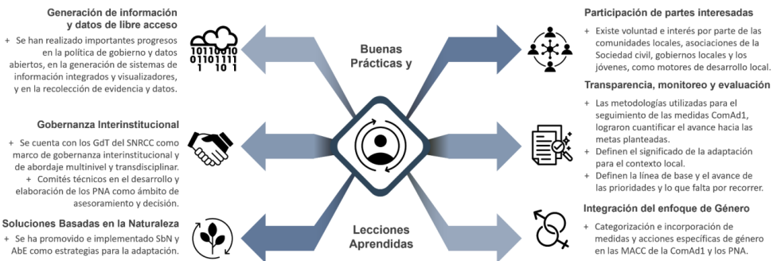
Figure 11: Best practices and lessons learned about CCA.
During the process of developing ComAd3, the best practices and lessons learned gathered during the ComAd2 process were reviewed and evaluated, confirming the most important ones and identifying new best practices. (Figure 11)
In a context of climate risks with increasingly frequent and severe impacts, and in an environment of uncertainty, it is essential to strengthen cooperation at the national, regional, and international levels to optimize the implementation of climate change adaptation actions.
Uruguay has included cooperation at its various levels as one of the components of its National Action Strategy for Climate Empowerment (ENACE). Within this framework, the Strategy includes cooperation as one of its strategic guidelines as a fundamental element for climate empowerment and aims to generate spaces for multilevel dialogue, promote the exchange of experiences and lessons learned among peers, and facilitate access to international cooperation for different sectors of society. The SNRCC is highlighted as a key area of horizontal cooperation on climate change at the national level. Within this framework, in addition to the Coordination Group, various thematic working groups composed of different institutions operate. For the purposes of this Adaptation Communication, the Loss and Damage Working Group and the Adaptation Working Group are highlighted.Regarding International and Regional Cooperation initiatives, participation in areas where the importance of climate change adaptation has been highlighted is mentioned, such as the Meeting of Environment Ministers of MERCOSUR, the Forum of Ministers of the Environment of Latin America and the Caribbean, and the Community of Latin American and Caribbean States (CELAC).
Furthermore, Uruguay actively participates in the Euroclima LAC Program.31 Within the framework of this European Union Cooperation program for the countries of Latin America and the Caribbean, Uruguay has been implementing different technical assistance initiatives, some linked to climate change adaptation planning, especially for the coastal zone, and the conservation of water resources, among others.
Likewise, regarding the exchange of knowledge and good practices, there are various networks for the exchange of knowledge and experiences at the national, regional, and international levels that are necessary to continue strengthening capacities for climate change adaptation. Regional projects also stand out, such as the one implemented by Uruguay and Argentina, within the framework of the Adaptation Fund, "Adaptation to Climate Change in Vulnerable Coastal Cities and Ecosystems of the Uruguay River."32
Role in Global Adaptation Initiatives: At the international level, within the context of the UNFCCC, Uruguay considers compliance with the provisions on international cooperation established in both the UNFCCC and the Paris Agreement to be particularly important. Uruguay is committed to working to contribute to the global objective on adaptation, as well as to the global stocktake regarding adaptation. Some of the concrete actions include the presentation of four national adaptation plans (NAP for Agriculture, NAP for Coasts, NAP for Cities and Infrastructure, and NAP for Energy), ComAd1 and ComAd2, which provide a qualitative approach to the components of the GGA, and this ComAd3.
The adaptation measures included in the first NDC have been monitored, and their progress has been reported in detail through the public viewer of the tracking system33. Management indicators have been developed based on the achievement of specific milestones or stages for each measure, which allows the progress of implementation to be expressed quantitatively and ensures transparent communication on the status of adaptation actions.
The challenge of assessing adaptation actions in terms of impact remains, both in monitoring ComAd1 and in planning follow-up for ComAd2. Furthermore, there is a transition to a monitoring, evaluation, and learning (MEL) framework, which is emerging as a methodology that helps improve transparency, assess the impact of measures, and apply lessons learned to the design of new measures. This approach not only facilitates monitoring the implementation of adaptation measures but also allows for adjusting and optimizing methodological processes to improve the formulation of strategies aimed at reducing vulnerability, strengthening the resilience of socio-ecological systems, and identifying risks, with the goal of minimizing loss and damage.
A fundamental aspect of the MEL framework is the promotion of continuous learning, the sharing of good practices, and the improvement of adaptation processes. This approach considers factors such as the specific context in which adaptation actions are implemented, the need for flexibility in the face of climate variation, uncertainty about the direct and indirect impacts of measures, and the generation of co-benefits that contribute to local development and social well-being.
The monitoring and evaluation of ComAd2 measures linked to the National Adaptation Plans (NAPs) will be carried out in line with the monitoring and evaluation plans established for each NAP, which requires effective coordination between the responsible teams.
Progress on the MEL framework for adaptation actions will be reported in the Biennial Transparency Reports, in accordance with the guidelines, modalities and procedures for the transparency framework for action and support, as referred to in Article 13 of the Paris Agreement and Decision 18/CMA.1.
MEL's work will include reviewing, monitoring, and updating gender measures in each of the ComAd's measures, continuing the efforts already made to achieve a gender-responsive monitoring system.
This Adaptation Communication is essential for Uruguay to address the challenges of climate change and advance toward sustainable development. Given that Uruguay is particularly vulnerable to climate impacts, the country must create more opportunities for its inhabitants, reduce poverty and social inequality, and at the same time protect its ecosystems and biodiversity.
The successful implementation of this ComAd3 will depend largely on access to external means of implementation, primarily through non-reimbursable funds, preferential financing, technology transfer, capacity building, and foreign direct investment from developed countries. Uruguay believes that the provision of these means by developed nations is essential to carrying out climate action within a framework of just transition and climate justice.
Uruguay has a proven track record of compliance and transparency in managing implementation resources for climate action. The urgency and needs of the ComAd require a significant acceleration in the arrival of these resources to the country, positioning Uruguay as an ideal environment to develop pilot projects that can be replicated globally.
Despite adaptation efforts, the impacts of climate change continue to cause loss and damage to Uruguayan society, its livelihoods, infrastructure, and ecosystems. Therefore, it is essential that Uruguay access funds specifically designed to address these consequences.
The following are Uruguay's objectives for mitigating climate change by 2035. These objectives are understood to be fair and ambitious considering that Uruguay is a developing country, whose participation in global net emissions in 2022 was 0.05%, in which its GHG emissions come mainly from food production and that it has implemented early a series of measures that allowed 60% of the global primary energy matrix and 94% of electricity generation to be based on renewable sources in the last 7 years.
Mitigation targets are set assuming no structural changes to the country's production matrix.
5.1.1. Unconditional objectives.
5.1.1.1. Unconditional global objectives to mitigate climate change
The unconditional global targets for mitigating climate change cover 99.2% of the gross GHG emissions (GWP100 AR5) of the 2022 INGEI.
|
GHG |
Unconditional mitigation targets by 2035 |
INGEI Sectors
(excluding category 3.B. Land) |
|
Do not exceed the following emission level (Gg of gas) |
||
|
CO2 |
9.267* |
Energy, IPPU, AFOLU and Waste 21.0% of 2022 GHG emissions in GWP100 AR5 |
|
CH4 |
818 |
Energy, AFOLU and Waste 56.7% of 2022 GHG emissions in GWP100 AR5 |
|
N2O |
32 |
Energy, IPPU, AFOLU (except subcategories 3.C.4. and 3.C.5 FSOM source), Waste 20.5% of 2022 GHG emissions in GWP100 AR5 |
|
GHG |
Unconditional mitigation targets by 2035 |
INGEI Sectors
(excluding category 3.B. Land) |
|
Reduction in consumption relative to a baseline |
||
|
HFC |
Reduce 30% Consumption relative to the baseline established at Based on average consumption from 2020 to 2022 |
IPPU 1.1% of 2022 GHG emissions in GWP100 AR5 |
5.1.1.2. Unconditional specific GHG emission intensity targets for beef production.
The unconditional specific GHG emissions intensity targets for beef production cover 59.2% of the gross GHG emissions (GWP100 AR5) of the 2022 INGEI.
|
GHG |
Unconditional mitigation targets by 2035 | Beef production |
|
Reduction in intensity (GHG emissions per unit of output) compared to 1990 |
||
|
CH4 |
Reduce CH4 emissions intensity by 35% per unit of product (g of beef by live weight) |
46.1% of 2022 GHG emissions in GWP100 AR5 |
|
N2O |
Reduce N2O emissions intensity per unit of product (g of beef live weight) by 36% |
13.2% of 2022 GHG emissions in GWP100 AR5 |
5.1.1.3. Unconditional specific objectives for conservation and carbon stock enhancement with respect to Land Use and Forestry.
|
GHG |
Carbon Pool / Land Use Category |
Unconditional mitigation targets by 2035 |
| Maintaining and increasing carbon stocks | ||
|
CO2 |
Living Biomass in Forest Lands |
Maintain 100% of the native forest area of 2012 (849,960 ha) |
|
Increase the effective area of forest plantations by 20% in 2020 (1,053,693 ha), following the forest policy and forest environmental management guidelines, promoting the valorization of products. |
||
| Maintain 100% of the 2018 plantation area (81,956 ha) for shade and shelter. | ||
| Soil Organic Carbon (SOC) in Grasslands, Peatlands, and Croplands |
Incorporation of good management practices for natural pastures and breeding herds in 1,500,000 hectares of natural grasslands |
|
|
Conserve 100% of the peatland area classified as "good" and "fair" in conservation status by 2020 (4,829 ha) |
||
| Maintain or recover SOC in 30% of the agricultural land that requires Soil Use and Management Plans, according to its soil condition of equilibrium and SOC saturation. |
NOTES: The target value for 2035, expressed in hectares, appears in parentheses. Category 3.B. Land showed net removals in the 1990-2022 INGEI.
5.1.2. Objectives conditional on specific additional means of implementation
The conditional targets for specific additional means of implementation presented below should be considered separate from the unconditional targets included in item 5.1.1 and imply greater ambition with respect to those targets. These conditional targets assume the provision of additional and specific means of implementation, including financing, technology transfer, and capacity building, to be provided by developed countries.
5.1.2.1. Conditional global targets for mitigating climate change.
The conditional global targets for climate change mitigation cover 99.2% of the gross GHG emissions (GWP100 AR5) of the INGEI 2022 and are independent of the targets indicated in section 5.1.1.1 and their values were estimated as incremental in relation to the unconditional values.
|
GHG |
Conditional mitigation targets for 2035 |
INGEI Sectors
(excluding category 3.B. Land) |
|
GHG emissions reduction (Gg of gas) |
||
|
CO2 |
960 |
Energy, IPPU, AFOLU and Waste 21.0% of 2022 GHG emissions in GWP100 AR5 |
|
CH4 |
61 |
Energy, AFOLU and Waste 56.7% of 2022 GHG emissions in GWP100 AR5 |
|
N2O |
2 |
Energy, IPPU, AFOLU (except subcategories 3.C.4 and 3.C.5, FSOM source) and Waste 20.5% of 2022 GHG emissions in GWP100 AR5 |
|
GHG |
Conditional mitigation targets for 2035 |
INGEI Sectors
(excluding category 3.B. Land) |
|
Reduction in consumption relative to a baseline |
||
|
HFC |
Reduce consumption by 5% compared to the established baseline based on the average consumption from 2020 to 2022 |
IPPU 1.1% of 2022 GHG emissions in GWP100 AR5 |
5.1.2.2. Conditional specific GHG emission intensity targets for beef production.
These conditional specific targets cover 59.2% of the gross GHG emissions (GWP100 AR5) of the INGEI 2022 and are independent of the targets indicated in section 5.1.1.2 and their values were estimated as incremental in relation to the unconditional values.
|
GHG |
Conditional mitigation targets for 2035 | Beef production |
|
Reduction in intensity (GHG emissions per unit of output) compared to 1990 |
||
|
CH4 |
Reduce CH4 emissions intensity by 2% per unit of product (g of beef live weight) |
46.1% of 2022 GHG emissions in GWP100 AR5 |
|
N2O |
Reduce N2O emissions intensity by 2% per unit of product (g of beef live weight) |
13.2% of 2022 GHG emissions in GWP100 AR5 |
5.1.2.3. Conditional specific objectives for conservation and carbon stock enhancement with respect to Land Use and Forestry.
The objectives stated in this section are independent of the objectives stated in section 5.1.1.3 and their values were estimated as incremental relative to the unconditional values.
|
GHG |
Carbon Pool / Land Use Category |
Conditional mitigation targets for 2035 |
| Maintaining and increasing carbon stocks | ||
|
CO2 |
Living Biomass in Forest Lands |
5% increase in native forest area since 2012 (42,498 ha) |
|
20% increase in the area of forest plantations for shade and shelter in agricultural establishments, including the use of native species compared to 2018 (16,391 ha) |
||
| Soil Organic Carbon (SOC) in Grasslands |
Incorporation of good management practices for natural fields and breeding herds in 2,500,000 hectares of natural grasslands |
NOTES: The target value for 2035, expressed in hectares, appears in parentheses. Category 3.B. Land showed net removals in the 1990-2022 INGEI.
Energy Sector (including Transportation) and Industrial Processes
(relating to Paragraphs 17, 18 and 20 of the PNCC)
In the decarbonization process of the different subsectors, a non-exhaustive set of applicable measures is defined to advance towards the proposed mitigation objectives, which are presented organized in strategic lines, with a brief description of the relevance and particularities of each subsector.
The following table shows the strategic lines and their connection to the measures established in the CDN2, where the continuity of the processes and actions can be observed.
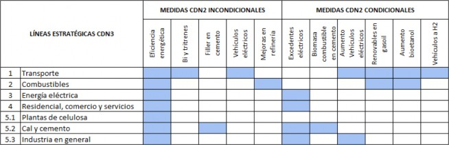
Strategic line 1: Decarbonization of transportation
Nearly 60% of the energy sector's emissions come from transportation, and the vehicle fleet has been steadily growing for years. Progress toward sustainable mobility is a fundamental contribution to decarbonization. A focus on "Avoiding and reducing motorized travel" is required.
`Shift to more environmentally friendly modes,´ and `Improve efficiency and decarbonize transportation modes,´ since solutions do not come solely from energy substitution, and a comprehensive approach to freight and passenger mobility is required. In this regard, there have been various advances, such as the formulation of the Sustainable Urban Mobility Policy (SUMP) and the promotion of vehicle electrification through tax and regulatory incentives.
The decarbonization of transport requires the participation and coordination of a variety of stakeholders with different roles at different levels of government, as well as bringing together mobility and territorial planning with other related policies. At both the public and private, educational, social, and productive levels, one measure worth promoting is institutional sustainable mobility plans, in which an institution or company works to ensure that its own trips or those generated by it, including those of the people it works with or assists, increase the sustainability of their trips.
Among the measures that are sought to be promoted or deepened and that are aligned with the SUMP are:
Active mobility, including adequate and safe infrastructure (walking, cycling)
Reducing unnecessary travel through city planning, virtualization, etc.
Discouragement of car use
Optimization of public transport services, as well as their accessibility and affordability
Intermodality in cargo and passengers
Boosting efficient modes of transportation, such as rapid transit trains and buses
Vehicle electrification of the different modes (taking advantage of the renewable electricity generation matrix)
Expansion of the public and private electric charging network, analyzing the use of existing infrastructure (e.g., service stations that could have hydrogen stations in the future)
Boosting energy efficiency, building on advances such as vehicle labeling
Promotion of other efficient and low-emission transportation technology alternatives, such as biofuels, e-fuels, and hydrogen fuel cells.
Strategic line 2: Decarbonization of fuel supply
Uruguay has no known exploitable oil and gas fields, although it has ongoing offshore exploration efforts. It has one refinery, owned by the state-owned company ANCAP, that processes imported oil. Natural gas is also imported, albeit in small volumes. While decarbonization in the various demand sectors has a strong component in replacing fossil fuels, efficiency in the fossil fuel chain contributes to reducing emissions in a transition process that is expected to be prolonged. In this regard, several actions are underway and others are being planned to improve energy efficiency in the refinery and in the distribution chain. Natural gas is more efficient than other fossil fuels and has been considered a transition fuel in other countries. In Uruguay, due to its low penetration and therefore limited infrastructure and equipment development, it is necessary to analyze whether there are possible uses that do not involve investments that slow the desired decarbonization.Regarding biofuels, ALUR (part of the ANCAP Group) produces bioethanol in two industrial plants, with a legal minimum blend of 8.5% in gasoline. As for biodiesel, there is installed production capacity and the corresponding regulations. Currently, there is no blend in diesel, although a blend of 5% to 7% has been established until 2022.
In turn, in relation to the development of a green hydrogen economy, Uruguay has a Roadmap35 with several lines of work underway, including a small-scale pilot project with a final investment decision adopted, which will use fuel cell vehicles in heavy transport in the forestry sector and, on the other hand, several projects in the evaluation stage.
The measures identified include:
With regard to biofuels, it is necessary to analyze and deepen the viability of different measures, also considering the availability of raw materials and the projects associated with e-fuels currently under study:
Increase the percentage of bioethanol in gasoline to 12%
Reincorporate biodiesel into diesel fuel, which has a maximum authorized content of 10%
Co-processing of fats and oils in the refinery
Incorporation of green diesel
In the case of heavy-duty vehicles, progress is being made based on the Green Hydrogen and Derivatives Roadmap, which is currently being implemented through the H2U Program.
Evaluate the advisability of generating a two-step transition using natural gas, taking into account security of supply, necessary infrastructure and equipment, their useful life and their horizon of use.
A major challenge of decarbonization involves economic, fiscal, and employment dimensions; it is posed in the long-term decarbonization process of the fossil fuel chain and requires ensuring a just transition, energy affordability, and considering fiscal impacts and alternatives.
Strategic Line 3: Deepening the decarbonization of the electricity supply and demand management to optimize the renewable component.Electricity generation is not only relevant in terms of its own emissions, but is also key to mitigation potential in consumer sectors through the electrification of uses. Necessary actions must consider the challenges of maintaining a high share of renewable sources in the electricity mix and their variability over different periods (daily, seasonal), as well as in different climatic situations (e.g., droughts), where a learning process already exists with areas worth exploring.
Among the measures being considered are:
Optimize the complementarity of solar and wind sources in expansion planning
Hybridization of generation parks to optimize infrastructure
Repowering and reengineering of existing generation plants
Central and distributed energy storage systems (batteries and others)
Intelligent demand management
Power to X systems
New business models for surplus electricity
Study of alternatives to fossil thermal generation with biomass and low-emission alternative fuels
Optimization of transmission and distribution infrastructure
Managing fossil fuel electricity exports in compliance with climate commitments
Strengthen regional integration, also taking into account the potential to include supply from other non-neighboring countries in the region, enabling transit routes through other countries.
Search for energy recovery alternatives associated with waste management
Although these sectors represent only 7% of CO2 emissions from the energy sector, with electricity being the predominant source, some fuel uses have been identified that will require complex transformation processes, and work needs to begin on them. One example is cooking with LPG, which has general and targeted subsidies and is used in more than 90% of households.
Among the measures being considered are:
Discouragement of the installation of fuel oil boilers
Segmented study of the population and implementation of pilot projects to replace LPG stoves with induction stoves that generate inputs for designing a replacement policy.
Promotion of both efficient heating technologies (electric and biomass) and cooling, expanding the current push for heat pumps and other efficient equipment.
Solar thermal energy installations
Strategic line 5: Decarbonization of the industrial sector
The industrial sector is responsible for 17% of energy emissions, with fuel oil accounting for approximately half, primarily in the generation of steam and direct heat. Regarding the industrial subsectors, 44% of energy emissions come from pulp mills, 36% from the lime and cement industry, and 20% from other industries (BEN 2023).
Pulp mills and the cement industry are concentrated in a few plants, have specific processes that contribute to emissions, and require specific analysis and actions.
Strategic line 5.1: Decarbonization of cellulose pulp production plants
While the primary energy source in pulp mills is black liquor (a biomass residue from production—considered CO2-neutral), energy emissions, primarily from fuel oil consumed in the lime kiln, account for almost half of the entire industrial sector's emissions. Emissions from the chemical process (CO2 release from carbonate burning) in the lime kiln represent 15% of national lime production.
This sector, highly concentrated in large industrial plants and specific processes, requires measures focused primarily on emissions from fuel oil combustion and the chemical process of lime kilns. As an example, since planning work is required in conjunction with the projects, a study of the technical feasibility of using biomass and green hydrogen as possible substitutes for fuel oil is identified.
Strategic line 5.2 Decarbonization of lime and cement plants
As in the pulp mill sector, this sector generates emissions from both the combustion of fossil fuels and the chemical process itself (CO2 release from carbonate combustion). Of this sector's total CO2 emissions, those linked to fuel combustion account for 45% (with coke as the main fuel), those from the chemical process in clinker kilns account for 44%, and those from lime production account for 10%.
The need to deepen some short-medium term implementation measures is identified, where there is experience already gained by some cement plants such as:
Partial replacement of fossils with biomass
Modification of the cement composition, which involves continuing to reduce the clinker content in the final cement
Studies to analyze the inclusion of green hydrogen as an energy source in the long term
Studies to analyze the possible capture and use of CO2 in chimneys.
Strategic line 5.3 Decarbonization of the industry (without cellulose, lime or cement)
Emissions from fuel combustion in industry, excluding pulp, lime, and cement plants, constitute nearly 20% of the total industry, and are widely distributed across different subsectors. Given the characteristics of national production, the food industry accounts for a significant proportion, with approximately 60% of emissions, almost two-thirds of which come from the dairy and meatpacking industries.
As for the fuels used, biomass consumption (firewood and others) accounts for the majority: 62%. GHG emissions are distributed among other energy sources, with fuel oil accounting for 50% due to steam generation, direct heat, and other uses.
Regarding the measures to continue advancing in the decarbonization of the industry, the following are considered:
Conduct or update biomass availability studies to assess the decarbonization potential of different sectors with this energy source.
Promote actions related to the generation of energy from waste (solid and/or liquid)
Survey of the steam and direct heat generation fleet focused on analyzing the technical and economic viability of replacing it with energy sources such as electricity and biomass (e.g., efficient pellet equipment) to generate inputs for a decarbonization program.
Continue to deepen energy efficiency, taking advantage of the diverse opportunities available in practices and technologies.
Accelerate the electrification of domestic transport, given that it accounts for 12% of industry emissions.
Considerations on measures and long-term vision:
The transition to a decarbonized energy system requires a comprehensive analysis and review of the current tax structure in the sector. It is necessary to identify potential tax barriers that hinder the adoption of clean technologies, as well as evaluate the effectiveness of existing incentives, ensuring that the tax framework is consistent with climate commitments and favors the development of a cleaner energy system.
The measures proposed within each strategic line for decarbonization described above often require support from additional and specific implementation means for their implementation, whether through capacity building, technology transfer, or financing. These include promoting intermodality in both freight and passenger transport, more efficient modes of transport (e.g., trains, rapid transit buses), replacing fossil fuels in steam generators and direct heat equipment in industry, electrifying residential cooking, improving energy efficiency in construction and existing buildings, and developing roadmaps for decarbonization in the lime, cement, and cellulose industries, which, due to their size and intensive use of fossil fuels, are of interest.
Among the cross-cutting measures, it is necessary to analyze the opportunity and challenge of establishing limits on CO2 emissions by sector or subsector or by enterprise, as well as possible requirements for new energy-intensive enterprises.
On the other hand, although Uruguay is part of the Powering Coal Past Alliance and has signed the Call to Action against the installation of new coal-fired power plants, there is no explicit ban on its use. While it is not used in electricity generation, in recent years it has begun to be used as a fuel in the cement industry.
The primary production sector requires collaborative work with stakeholders to define measures to improve the efficiency of agricultural machinery, practical and technological aspects, and the potential use of biofuels, among others, in order to reduce fossil fuel consumption.
In addition to reducing greenhouse gas emissions, the decarbonization of energy demand sectors potentially has several positive and negative impacts. Among the positive impacts are greater energy sovereignty through the substitution of imported oil and derivatives for electricity or biomass in a volatile oil price environment; improved air quality; improved national image; the attraction of industries and investments seeking clean energy; the development of new sectors of the economy and the expansion of others; and the growth of green jobs, among others. Among the challenges are job restructuring in the fuel chain; a redistribution of the tax burden currently falling on fuels to other sectors of the economy; and the development of new sectors associated with clean energy and green jobs. One aspect to analyze is the refinery processes themselves, the possible need to reconfigure production, equipment, and potential investments. A multidimensional analysis of the impacts of different policy scenarios with a just transition approach is one of the actions that requires support given the challenge involved. The decarbonization process requires an orderly and planned transition that guarantees the sustainability of the energy system as a whole.
Industrial Processes and Product Use Sector - Use of products that deplete the ozone layer
(relating to Paragraph 4 of the PNCC)
By 2035, the conversion to refrigeration and air conditioning technologies with refrigerants that do not damage the ozone layer and have the lowest possible global warming potential will be intensified.
5.2.2. Agriculture, Land Use, and Forestry Sector
(relating to Paragraphs 12 and 16 of the PNCC)
Uruguay's agricultural sector is one of the main contributors to GHG emissions, accounting for approximately 75% of the country's emissions, primarily due to enteric fermentation in cattle and agricultural soil management. However, it is also a highly vulnerable sector to the effects of climate change, with phenomena such as droughts, floods, heat waves, and extreme weather events significantly impacting crop and livestock productivity.
In an effort to harmonize the country's mitigation contributions, given the global context, its adaptation needs, the current production matrix, and other ongoing strategic processes, the premise for designing the third NDC was to increase ambition from a qualitative perspective by reinforcing the identification, in roadmap format, of the strategic lines, actions, and possible means of implementation through which each agricultural sector can contribute to achieving the proposed objectives.
The increased ambition with a qualitative approach also includes seeking synergies with strategic processes promoted in the country. For example, the National Circular Economy Strategy mentioned at the beginning of the document promotes resource recovery and waste reduction, which is crucial in sectors such as dairy and horticulture, where efficient management of effluents and byproducts can reduce emissions. Similarly, the National Sustainable Bioeconomy Strategy encourages the responsible and efficient use of biological resources, which directly contributes to reducing emissions during the production phase by optimizing the use of soil, water, and nutrients. These strategies also promote the adoption of technologies that improve energy efficiency and reduce the use of fossil fuel-based inputs, which are essential for mitigating climate change.
The Ministry of Agriculture, Livestock and Livestock (MGAP) in particular promotes agricultural development policies aligned with sustainability. It highlights the National Strategy for Agricultural Development, which identifies key areas to strengthen in the country to consolidate sustainable production systems in all three dimensions. The link with the National Agricultural Adaptation Plan and other plans such as the National Plan for Family Farming, the National Plan for the Promotion of Agroecological Transitions, and the National Plan for Gender in Agricultural Policies is essential to increasing the resilience of production systems, which will allow them to cope with the pressures of climate change. These strategic processes not only promote the adoption of technologies that allow for better climate risk management, but also integrate specific actions to protect rural livelihoods, ensure food security, and conserve natural resources. By identifying and connecting these plans with the NDC3, Uruguay can implement measures that are economically viable and environmentally sustainable, ensuring that adaptation policies contribute to the well-being of producers and the conservation of ecosystems.
Furthermore, within the framework of the United Nations Convention to Combat Desertification (UNCCD), the country has established a voluntary target to reduce the rate of loss of natural land in the "Voluntary Target Setting Program for Land Degradation Neutrality in Uruguay" (2022).
This goal, for the 2026-2030 period, established that the average annual rate of natural grassland loss will be 50% of the national average for the 2000-2015 period. In this regard, the agricultural and land use sector measures in this NDC3 will be consistent with this goal and others established by the country in international frameworks.
Roadmap Approach
For the design of sectoral roadmaps, key stakeholders were primarily identified by sector. Five productive sectors were prioritized: Livestock, Dairy, Agriculture (which includes rice production), Horticulture and fruit growing, and Forestry.
For each of these sectors, a Roadmap was developed with a 2035 horizon, identifying current strategic processes in the country linked to the agricultural sector in general and to specific chains, in order to identify strategic lines and synergistic actions that contribute to the resilient development of the AFOLU sector. Possible means of implementation and actions driven by the private sector were also identified. A sixth roadmap was generated transversally to promote Research, Development, and Innovation that supports the AFOLU sector in meeting its objectives in the CDN3.
Key actors and institutions from government, academia, the private sector, and organized civil society were convened for six workshops where they worked to obtain input for defining sectoral roadmaps and gender mainstreaming, based on the commitments made in the second CRC, revising them when deemed necessary, and identifying key actions and means for their fulfillment.
As part of the process, six Roadmaps were developed, which allow for the identification of strategic lines, actions, and means of implementation for their fulfillment.
These strategic lines can be grouped into cross-cutting (applying to all roadmaps), multi-sector (applying to more than one sector), and specific (applying to a particular sector).
Cross-cutting strategic lines:
Information for decision-making. The proposal is to strengthen the data and models that support the AFOLU sector's NDCs across a cross-cutting framework, including improvements to the Greenhouse Gas Inventory, emissions estimates and projections, sequestration and adaptive capacity, and cost-benefit analysis of proposed actions.
Mainstreaming the gender perspective and integrating gender and climate change approaches. The country has a National Gender Plan in Agricultural Policies that conducted an in-depth assessment of the situation of women in agricultural production and implemented key actions to reduce gender inequalities in rural areas and the country's agricultural sector. This line of action aims to strengthen the incorporation of the gender perspective in policies, programs, and projects developed as part of NDC3, as well as the incorporation of climate change mitigation and adaptation commitments into sectoral gender policies, in line with NDC3.
R&D Agenda. The national R&D agenda is carried out through a perspective from and for our country's main production systems, while also taking into account cross-cutting areas that influence the performance and sustainability of all systems. Under this particular approach, INIA's different research areas interact to generate knowledge and transfer technology to solve priority problems for these production systems.
Multi-sectoral Strategic Guidelines with an emphasis on mitigation and adaptation co-benefits:
Genetic improvement in cattle and sheep. There is evidence that genetic improvement impacts the emission intensity of meat, wool, and milk production, as well as the animals' tolerance to extreme weather events. The proposal is to create a public-private genetic improvement platform that covers at least the main breeds used in the country, validated in the national context, and accessible to producers. This line of action has been identified in the Livestock Roadmap, the Dairy Roadmap, and the Research and Innovation Roadmap.
Dietary compounds that reduce methanogenesis. The development of international and national knowledge has identified various compounds that can act as inhibitors of methanogenesis in enteric fermentation. This ranges from the incorporation of dietary supplements to compounds present in forage species. This line of research proposes that the country have information on potential dietary compounds that reduce methanogenesis for different livestock and dairy production systems, their implementation methods and costs, risks, and co-benefits to support the design of public policies. This line of research has specific actions identified in the Livestock Roadmap, the Dairy Roadmap, and the Research and Innovation Roadmap.
Animal health, reproductive efficiency, and longevity. Productivity at the individual animal level, for both meat and milk, directly depends on the health of each animal, and at the farm level, on overall animal health, reproductive efficiency, and longevity. This directly impacts the emissions intensity of these production systems. Furthermore, animal health is key to better addressing potential pressures linked to climate change and variability. This line of research aims to generate information on the role of animal health, reproductive efficiency, and longevity in greenhouse gas emissions and adaptive capacity in cattle and sheep production, as well as the necessary management measures and technologies to maximize their mitigation and adaptation benefits. This line of research has specific actions identified in the Livestock Roadmap, the Dairy Roadmap, and the Research and Innovation Roadmap.
Effluent and manure management. Effluent and manure from dairy production systems and meat farms represent a significant proportion of the carbon footprint of these productions. This line of action proposes promoting the incorporation of technologies to reduce methane emissions in effluent and manure management systems on dairy farms and farms, improving water quality. It also seeks to promote the implementation of systems to capture and utilize methane from effluent and/or organic waste management on agricultural farms to reduce methane emissions while also reducing production or general operating costs. The full implementation of this strategic line will require specific additional implementation resources, particularly external financing, to complement national resources. This line of action has been identified in the Livestock Roadmap, the Dairy Roadmap, and the Research and Innovation Roadmap.
Good nitrogen fertilization practices. Nitrogen fertilizers are a major source of nitrous oxide emissions. This line of action proposes implementing technologies and good management practices that improve the efficiency of nitrogen fertilizer utilization and uptake in agricultural crops, thereby reducing nitrogen losses. Implementation of this strategic line will require additional, specific implementation resources, particularly financing, to complement the national effort. Specific actions are identified in the Agriculture Roadmap and the Research and Innovation Roadmap.
Ecological integrity of native forests. Native forests are a reservoir of biological diversity and provide important environmental and ecosystem services. From a climate perspective, they function as important carbon sinks, both in soils and biomass. This line of action proposes maintaining or, subject to availability, increasing the area of native forest, seeking to reverse degradation processes and preserving ecological integrity, within the framework of the provisions of the Forestry Law. The full implementation of this strategic line of action will require additional specific implementation resources, particularly external financing, to complement national resources. This line of action has specific actions identified in the roadmaps for Livestock, Dairy, Agriculture, and the Forestry Sector.
Plantations for shade and shelter. The use of shade and shelter forests offers important co-benefits from the perspective of adaptation, mitigation, and livestock and dairy productivity. When native species are considered, biodiversity conservation co-benefits are also incorporated. This line of action proposes maintaining, or subject to availability of resources, increasing, the area of plantations for shade and shelter on agricultural establishments, including the use of native species. The full implementation of this strategic line of action will require additional specific implementation resources, particularly external financing, to complement national resources. This line of action has specific actions identified in the Livestock, Dairy, and Forestry Sector Roadmaps.
Specific sectoral guidelines with an emphasis on mitigation and adaptation co-benefits:
Promotion of good management practices for natural pastures and herds in livestock farming. Livestock production in Uruguay is one of the main sources of methane emissions in the country, and a large portion of production is carried out on natural pastures or open fields. Various experiences from institutions linked to livestock production have identified a set of herd and open field management practices that improve farm productivity while reducing emissions intensity, improving adaptive capacity, and contributing to biodiversity conservation. This line of action proposes increasing the area designated for livestock farming on open fields where these good practices are incorporated, directly contributing to the goal of reducing emissions intensity in meat production. The full implementation of this strategic line of action will require additional specific implementation resources, particularly external financing, to complement national resources. The specific actions identified for this line of action are found in the Livestock Roadmap.
Carbon sequestration in forest plantations. Uruguay has a current forest policy that promotes forest plantations, incorporating sustainability principles. This policy provides for an increase in forested area. Furthermore, the country promotes the valorization of forestry products, such as structural timber and silvopastoral systems. It also encourages the use of forest residues for the production of bioproducts and energy. This line of action proposes promoting carbon sequestration in forest plantations by increasing their area of priority forest land and land with preferential forest suitability, as defined in Decree 405/21, in line with the forest policy and the promotion of plantations for high-value products. The specific actions identified for this line of action are found in the Forest Roadmap.
Organic carbon conservation in agricultural soils. Soils are of fundamental strategic importance for climate change mitigation due to the enormous amounts of carbon they store in the form of organic carbon. Agricultural practices such as crop rotations, tillage and management methods, or incorporation of residues into the soil have implications for changes in soil carbon content. This line of action proposes achieving production systems that maximize carbon retention or sequestration in agricultural soils that require Soil Use and Management Plans, based on the best information available for the country and subject to soil carbon equilibrium and saturation. The specific actions identified for this line of action are found in the Agriculture and Rice Roadmap.
Types of actions identified to achieve the objectives
In the workshops held, specific actions were identified for each strategic line, which allow progress to be made toward meeting the objectives committed to for the AFOLU sector in this CDN.
These actions can be grouped as follows:
Technical assistance and extension: Provide technical assistance and training for the adoption of sustainable technologies in the agricultural sector.
Develop incentives: Implement economic and financial incentives to promote sustainable practices and emissions reduction.
Public-private and international collaboration: Strengthen cooperation on projects involving good management practices, technological innovation, and traceability platforms.
Promotion and dissemination of technologies: Disseminate technologies for sustainable resource management and reducing environmental impact.
Regulation and oversight: Strengthen the regulation and oversight of agricultural practices and incentives for sustainability.
Innovation and markets: Promoting access to carbon markets through sustainable practices in agriculture and livestock.
Waste Sector - Solid Waste
(relating to Paragraph 21 of the PNCC)
The unconditional measures identified are:
By 2035, all final disposal sites for household waste will be in adequate environmental conditions and equipped with technologies that reduce methane emissions.
Food Loss and Waste (FLW) will be reduced by 50% by 2035.
By 2035, all departments of the country will have systems in place for the separation of recyclable waste at source for recovery.
By 2035, organic waste recovery strategies will be implemented in all departments of the country.
If specific additional means of implementation are available, the following conditional measures
have been identified:By 2035, surplus food will be channeled primarily for donation for human consumption.
By 2035, food loss and waste will be channeled primarily into animal feed, in compliance with existing health regulations.
By 2035, a system for the differentiated management and recovery of construction waste will be implemented.
By 2035, material circularity indices will improve to reduce GHG emissions.
5.2.4. Waste Sector - Industrial and Domestic Wastewater
(relating to Paragraph 21 of the PNCC)
The unconditional measures identified are:
By 2035, industrial wastewater treatment systems will have been upgraded with technologies that reduce CH₄ emissions. This development includes the implementation of new systems that do not generate methane, as well as CH₄ capture and burning systems for anaerobic treatment, covering treatment systems that produce 20% of emissions.
By 2035, the average annual increase in the sanitation connection rate is expected to be approximately 3.5%, consistent with the increase seen in recent years.
If specific additional means of implementation are available, the following conditional measures
have been identified:By 2035, industrial wastewater treatment systems will have been upgraded with technologies that reduce CH₄ emissions. This development includes the implementation of new systems that do not generate methane, as well as CH₄ capture and burning systems for anaerobic treatment, covering treatment systems where 60% of emissions are produced.
6. Cross-cutting and capacity-building measures.
This section includes the main cross-cutting measures that contribute to climate-resilient development, capacity building, and knowledge generation. To implement the measures outlined in this section of NDC3, Uruguay may use means of implementation to be provided within the framework of the UNFCCC, including financing, technology transfer, and capacity building and strengthening.
Uruguay has been implementing its National Climate Empowerment Action Strategy since 2022, which has a 2050 horizon and its respective Action Plan.The first Action Plan on Gender and Climate Change is also being implemented, and the first phase of on-site dialogue is nearing completion for the formulation of the new Plan, which would take effect in 2025.
According to the measures that were proposed in the transversal measures section of the CDN2, with a horizon of 2030, it is assumed that for the implementation period of this CDN3 the following objectives were achieved:
The National Public Education Administration (ANEP) has incorporated environmental education for climate change into all educational subsystems.
The topic of climate change has been incorporated into the public sector's training offerings.
The relationship between the SNRCC and the Uruguayan Antarctic Institute (IAU) has deepened.
Annual "Open Climate Data" initiatives (competitions and/or training) are implemented to promote the use and generation of open data by citizens, organizations, and institutions, and to contribute to the implementation of open government policy.
Annual calls and competitions are held to recognize innovative initiatives and good practices developed by young people on climate change issues.
There is a network of climate change communicators nationwide.
There is a youth representation space within the SNRCC framework, which includes technical support that strengthened participation and influence in climate public policy processes.
Studies on social perceptions of the impact and responses to climate change were conducted, which included adolescents and young people.
Disaggregation by age group or single age, or at least one category referring to childhood and adolescence, has been incorporated into the measures linked to data generation.
Financial sector risk analyses have incorporated climate risk.
Preliminary environmental authorizations, operating authorizations, and other permits incorporate the climate change dimension, particularly in relation to greenhouse gas emissions.
Companies and organizations have guidelines for estimating and reducing GHG emissions.
There is a voluntary registry of GHG emissions, reductions, and offsets from companies, based on the principle of environmental integrity.
There is an instrument to support and finance R&D&I in Climate Change that effectively contributes to reducing knowledge gaps.
Considering that work continues on the measures and processes defined in previous NDCs, the following priorities are identified for the implementation period of this NDC3:
ENACE's action plan and its strategic lines are evaluated and updated: 1. Environmental education for climate change, 2. Training for a just transition towards sustainable, inclusive, resilient and low-carbon development, 3. Generation of knowledge, research, development and innovation to address the challenges of climate change, 4. Generation and public access to information, 5. Communication and awareness-raising, 6. Empowerment through participation and climate action, 7. National and international cooperation36.
A "National Strategy for Adolescence, Youth, and Climate Change" is being implemented with the goal of mainstreaming youth perspectives into public climate change policies, ensuring budget allocations to implement the corresponding Action Plan. This Strategy was validated by the youth representative group in the SNRCC, and the Action Plan was designed based on a nationwide public consultation with a local focus, which also includes a specific section for children.
Scientific research on natural resources and the effects of climate change on Antarctic ecosystems that could affect the climate of our region has been promoted in training and specialization programs in the academic field and in line with the Roadmap 2045 of the institutions of the National Antarctic Program.
Tools and information for climate decision-making in the private and financial sectors are developed and disseminated.
The climate change response capacities of the Women's Advancement Mechanisms (WAMs) at all three levels of government have been strengthened, and operational plans are being implemented at the various levels and territories involved.
A third Gender and Climate Change Plan is being implemented with a 2035 horizon, coordinated with the various levels of government, throughout the country with the participation of groups, collectives, and ventures led by women.
7. Information to facilitate clarity, transparency and understanding (ICTU)
This information is provided in accordance with Annex I to Decision 4/CMA.1, which decided that "…when communicating their second and subsequent nationally determined contributions, Parties shall provide the information necessary for the purposes of clarity, transparency and understanding set out in Annex I, to the extent applicable to their nationally determined contributions…".
The information required in the aforementioned annex is described below, for the paragraphs that apply to Uruguay's CRC3.
Quantitable information about the reference point (including, if applicable, a base year).
Reference years, base years, reference periods, or other starting points.
For the global mitigation targets for CO2, CH4, and N2O described in section 5.1.1.1, the definition of a reference year, base year, reference period, or other starting point against which the target value can be compared does not apply. However, it is helpful to know the latest available values for 2022, as detailed in 8.3.b below, estimated in the INGEI 2022.
For the global HFC consumption reduction mitigation target, the reference period is 2020-2022, as the reference value is the average consumption over that period.
For the specific CH4 and N2O emission intensity targets for beef production described in section 5.1.1.2, the reference year is 1990.
For the specific carbon stock conservation and enhancement objectives described in section 5.1.1.3, the following reference years were established:
Area of forest plantations: 2020
Forest plantations for shade and shelter: 2018
Grassland area under good natural range management practices and breeding herd: 2020
Area of peatland classified as "good" and "fair" in conservation status: 2020
Agricultural area where SOC is maintained or recovered: not applicable
b) Quantifiable information on the reference indicators, their values in the relevant reference years, base years, reference periods or other starting points and, as appropriate, in the reference year.
For the global mitigation targets for CO2, CH4 and N2O described in section 5.1.1.1, the emission values in 2022, according to the INGEI 2022 are: 7,872 Gg of CO2; 770 Gg of CH4 and 28 Gg of N2O.
For the global mitigation target of reducing HFC consumption, the reference value is 1,012,431 tonnes of CO2 equivalent according to the GWP100 AR4 metric (baseline value reported to the Ozone Secretariat based on average consumption over the 2020-2022 reference period).
For the specific CH4 and N2O emission intensity targets for beef production described in section 5.1.1.2, the indicator values (CH4 and N2O intensities in Gg Gas/Gg live weight beef) for the reference year 1990 are 0.78 and 0.02, as shown in the table below. They are estimated as the average of the annual intensities for the period 1987 - 1991, ignoring the maximum and minimum annual values. Only CH4 emissions from enteric fermentation and manure management, and N2O emissions from direct and indirect emissions on managed soils from excretion by grazing non-dairy cattle, as detailed in 8.3.b) below, are considered.
The emission values for 1990 are those estimated in the INGEI 2022 (1990-2022 series), while the emission values for 1987, 1988, 1989 and 1991 are calculated from the implicit emission factor for 1990 multiplied by the number of cattle in the corresponding year.
Beef production (g of beef in live weight) from 1987 to 1991 is estimated by the Office of Agricultural Programming and Policy (OPYPA) of the MGAP. Detailed information on the calculation methodology is available in the study by Bervejillo, J. and García, F. published in the 2018 OPYPA Yearbook37.
The absolute values and intensities are presented in the table below:
|
Absolute values (1987 - 1991) |
||||||
|
Gas and Activity |
Unit / Year |
1987 |
1988 |
1989 |
1990 |
1991 |
|
CH4 Beef Livestock Farming (GCV) |
Gg |
517.76 |
546.55 |
532.87 |
485.06 |
469.49 |
|
N2O Beef Cattle Farming (BCF) |
Gg |
15.69 |
16.57 |
16.15 |
14.70 |
14.23 |
|
Live weight of cattle produced |
Gg |
850.11 |
656.09 |
346.96 |
567.88 |
714.94 |
|
Intensity values (1987 - 1991) |
||||||
|
Gas and Activity |
Unit / Year |
1987 |
1988 |
1989 |
1990 |
1991 |
|
CH4 Beef Cattle (GCV) / Live weight of cattle produced |
Gg/Gg |
0.61 |
0.83 |
1.54 |
0.85 |
0.66 |
|
N2O Beef Cattle (BCC) / Live weight of cattle produced |
Gg/Gg |
0.02 |
0.03 |
0.05 |
0.03 |
0.02 |
|
Intensity values (1990) |
||
|
Gas and Activity |
Unit / Year |
Values |
|
CH4 Beef Cattle (GCV) / Live weight of cattle produced |
Gg/Gg |
0.78 |
|
N2O Beef Cattle (BCC) / Live weight of cattle produced |
Gg/Gg |
0.02 |
For the specific carbon stock conservation and enhancement objectives described in section 5.1.1.3, the reference values are as follows:
Area of forest plantations: 1,053,693 ha
Forest plantations for shade and shelter: 81,956 ha
Grassland area under good natural range management practices and breeding herd: 652,455 ha
Area of peatlands classified as "good" and "fair" in conservation status: 4,829 ha
Agricultural area where SOC is maintained or recovered: Not available Literal c) not applicable.
d) Target relative to the reference indicator, expressed numerically, for example, as a percentage or as the amount of reduction.
Definition of global mitigation goals (or objectives) and corresponding indicators:
As described in section 5.1.1.1, the overall emissions mitigation targets consist of not exceeding emission levels for CO2, CH4 and N2O, expressed in Gg of gas, as well as a target for reducing HFC consumption.
The CO2 target in section 5.1.1.1 may be adjusted based on the water conditions in 2035 as follows:
In the event that hydroelectric generation in 2035 is greater than or equal to 6,070 GWh38, the target value for 2035, in Gg of CO2, will be the value set out in section 5.1.1.1 of this NDC;
In the event that hydroelectric generation in 2035 is less than 6,070 GWh, the value of the 2035 target set out in section 5.1.1.1 of this NDC, in Gg of CO2, will be added to the value resulting from subtracting from the CO2 emissions of category "1.A.1.ai - Electricity generation" in 2035, the CO2 emissions from exported electricity generation in 2035 and 240 Gg of CO2 corresponding to the level of emissions from electricity generation in a year of average hydraulicity, according to the following formula:
Target value 2035 (in Gg CO2) = X + (Z - Y - 240)
Being:
X = CO2 target value for 2035 as set out in section 5.1.1.1 of this NDC, Gg.
Z = CO2 emissions from category "1.A.1.ai - Electricity generation" for the year 2035, according to INGEI 2035, Gg.
Y = CO2 emissions from exported electricity generation in 2035, published in the National Energy Balance for 2035, Gg.
240 = Level of CO2 emissions from electricity generation in a year of average hydraulicity considering the energy demand projected to 2035, Gg.
(Z - Y - 240) will be less than or equal to 1,000 Gg CO2.
If (Z - Y - 240) is negative, the value 0 will be taken.
The indicators for these global objectives are CO2, CH4 and N2O emissions, which will be reported in the INGEI 2035 according to the detailed coverage below in 8.3.b).
The HFC consumption reduction target is defined relative to a baseline based on average consumption from 2020 to 2022, under the Kigali Amendment to the Montreal Protocol.
The indicator for this HFC consumption reduction target (assimilated to imports in the case of Uruguay) will be the HFC consumption value reported as activity data in the INGEI 2035.
Definition of specific GHG emission intensity goals (or objectives) for beef production and corresponding indicators:
As described in section 5.1.1.2, the specific CH4 and N2O emissions intensity targets for beef production consist of percentage reductions in intensity relative to the 1990 intensity.
The indicators for these objectives are the CH4 and N2O intensities in 2035 (Gg Gas/Gg of beef in live weight) and are estimated as the average of the annual intensities for the period 2032-2036 without considering the maximum and minimum annual values in the calculation, with the CH4 and N2O emissions from the years 2032 to 2036 being those reported in the INGEI 2036, according to the coverage detailed below in 8.3.b).
Beef production, measured as Gg of beef in live weight, from 2032 to 2036, will be reported in the Statistical Yearbook of the Directorate of Agricultural Statistics (DIEA) of the MGAP.
Definition of specific goals (or objectives) for conservation and carbon stock enhancement in relation to Land Use and Forestry and corresponding indicators:
As described in section 5.1.1.3, the objectives consist of maintaining or increasing areas of different land-use categories, so as to maintain or increase the carbon stock in the living biomass or soil organic carbon pools, relative to the existing areas in different reference years, depending on the objective.
Therefore, the corresponding indicators are:
Native forest area for 2035: area reported for 2035 in the Forest Cartography of the DGF of the MGAP.
Effective area under forest plantation management in 2035: effective area under forest plantation management in 2035, reported in the Statistical Yearbook of the DIEA of the MGAP.
Area of forest plantations for shade and shelter in 2035: area of curtains and forests for shelter and shade in 2035, reported in the Forest Cartography of the DGF of the MGAP.
Grassland area under good management practices for natural fields and breeding herds in 2035: This arises from the systematization for 2035 of information collected from a survey of livestock producers on natural field management and practices carried out with cattle and sheep.
Area of peatland classified as having "good" and "fair" conservation status in 2035: This will be obtained from mapping work for 2035, using satellite imagery and field verification. Conservation status is classified according to: i) the typical peatland vegetation cover identifiable in satellite imagery; ii) the presence of artificial drainage. Peatlands are considered to be in "fair" condition if they have homogeneous vegetation cover and artificial drainage, while they are classified as having "good" condition if they have homogeneous vegetation cover and no artificial drainage.
Agricultural area where SOC is maintained or recovered in 2035: The proportion of the area under PUMS that is counted for the indicator calculation will be determined based on the agronomic practices, crops, and technologies determined to maintain or sequester SOC in the soil. This area will be obtained from the PUMS management system database of the General Directorate of Natural Resources of the MGAP.
Information about the data sources used to quantify the benchmarks.
For the global mitigation targets for CO2, CH4 and N2O described in section 5.1.1.1, the source of the latest available values is INGEI 2022.
For the global HFC mitigation target, the reference point information source is the value published by the Ozone Secretariat for average consumption from 2020 to 2022, under the Kigali Amendment to the Montreal Protocol.
For the specific CH4 and N2O emissions intensity targets for beef production described in section 5.1.1.2, the source of information for the reference year is the INGEI 2022 for emissions and the OPYPA Yearbook 2018 for beef production (see section 8.1.b).
For the specific carbon stock conservation and enhancement objectives described in section 5.1.1.3, the sources of information for the reference values are as follows:
Native forest area: Forest Cartography of the DGF of the MGAP.
Area of forest plantations: Statistical Yearbook of the DIEA of the MGAP.
Forest plantations for shade and shelter, including silvopastoral systems: Forest Cartography of the DGF of the MGAP.
Grassland area under good management practices for natural range and breeding herds: Survey of livestock producers on natural range management and practices performed with cattle and sheep, conducted in 2020.
Agricultural area where SOC is maintained or recovered: Not applicable (no reference value available).
f) Information on the circumstances under which the Party may update the values of the reference indicators.
The only circumstance under which the reference indicator values may be updated is due to recalculations reported in Inventory Reports (IRs) as a result of continuous improvement activities for emissions estimates. This applies only to the specific emissions intensity reduction targets for beef production in section 5.1.1.2 of this NDC3.
Recalculations could result in different values for CH4 and N2O emissions from beef production, which are included in the intensity calculation for the 1990 reference year.
7.2 Deadlines and/or application periods.
Term and/or period of implementation, including start and end dates, in accordance with any other relevant decisions to be taken by the Conference of the Parties serving as the meeting of the Parties to the Paris Agreement (CMA).
The application period of CDN3 is the period 2031-2035, although the implementation of policies and measures to progress towards the 2035 objectives may begin before this application period. The assessment of the scope of the objectives will be reported in the BTR for the year 2038, containing the 1990-2036 INGEI series, since to calculate the values of the indicators in section 5.1.1.2 it is necessary to have estimated the 2035 and 2036 INGEI, contained in said series.
Whether this is a single-year goal or a multi-year goal, as appropriate.
All the goals (or objectives) of this NDC3 are single-year goals: 2035.
Overview of the goal.
The global mitigation objectives of not exceeding absolute gas emissions levels cover CO2, CH4 and N2O emissions occurring throughout the national territory, which together represent 99.3% of the gross CO2-eq emissions estimated in the INGEI 2022 (GWP100 AR5).
The global mitigation targets consisting of the reduction of HFC consumption in relation to the baseline established within the framework of the Kigali Amendment to the Montreal Protocol cover HFC consumption throughout the national territory and represent 1.0% of the gross CO2-eq emissions estimated in the INGEI 2022 (GWP100 AR5).
SF6 and PFC emissions are not included, as they represent less than 0.01% of national emissions (excluding Category 3.B Land).
The specific mitigation objectives, consisting of reducing the intensity of CH4 and N2O emissions per unit of beef production, cover CH4 and N2O emissions from said production and reach 59.3% of the gross CO2-eq emissions estimated in the INGEI 2022 (GWP100 AR5).
The specific objectives for conservation and carbon stock enhancement in land use and forestry categories cover different land areas under certain uses and are not expressed in CO2 removal units, even though category 3.B Land showed net CO2 removals throughout the INGEI 1990-2022 series.
With respect to the provisions set out in the Paris Agreement, only the unconditional objectives in Section 5.1.1 shall be subject in a binding manner to the enhanced transparency framework for action and support defined in Article 13 of the Paris Agreement and to any provisions relating to the non-punitive and non-adversarial mechanism to facilitate implementation and promote compliance defined in Article 15 of the Paris Agreement, and as decided by the Conference of the Parties serving as the meeting of the Parties to the Paris Agreement.
Sectors, gases, categories, and reservoirs covered by the Nationally Determined Contribution, which, where appropriate, comply with the Intergovernmental Panel on Climate Change (IPCC) guidelines.
The CO2, CH4 and N2O emissions covered by CDN3 correspond to all categories and sources of emissions estimated in the 2022 INGEI (the latest INGEI available at the time of preparing CDN3), without considering category 3.B Land of the 2006 IPCC Guidelines, nor subcategories 3.C.4. and 3.C.5 for the FSOM source, which directly depends on category 3.B. Land. This source represented less than 0.66% of national emissions in the 2022 INGEI (without considering category 3.B. Land).
The CH4 emissions covered in the specific emissions intensity reduction targets per unit of beef production are those estimated in 3. A.1.a.ii (Enteric fermentation of cattle) and
3.A.2.a.ii (Cattle manure management).
The N2O emissions covered in the specific emissions intensity reduction targets per unit of beef production are those estimated for cattle in 3.C.4 (Direct N2O emissions from managed soils) and 3.C.5 (Indirect N2O emissions from managed soils).
The CO2 reservoirs covered in the specific conservation and carbon stock enhancement targets for land use and forestry categories are: living biomass (in forest land) and Soil Organic Carbon, SOC (in grasslands, peatlands and croplands).
How the Party has taken into account paragraphs 31(c) and (d) of decision 1/CP.21.
Uruguay has included in its NDCs all categories, sources and activities of anthropogenic emissions estimated in its INGEI (except for the FSOM source of subcategories 3.C.4. and 3.C.5, which directly depends on category 3.B. Land, and SF6 and PFC emissions, which together represented 0.7% of national emissions in the INGEI 2022).
No category, source, or activity considered in NDC 1 has been excluded in its updates (NDC 2 and NDC 3). In contrast, NDC 2 and NDC 3 include emission categories and sources that were not included in NDC 1 because, at the time of NDC 1's development, those emissions were not estimated (NE). Once included in NDC 2, they continued to be included in NDC 3.
Category 3.B Land in the AFOLU sector is excluded from the global mitigation targets because this category showed net removals throughout the 1990-2022 series, so Uruguay has decided to focus its contribution on addressing gross emissions. For this category 3.B Land, specific carbon stock conservation and enhancement objectives are established, with the objective of preserving or increasing land use and forestry areas.
Literal d) does not apply.
7.4. Planning processes.
a) Information on the planning processes that the Party has undertaken to prepare its nationally determined contribution and, if available, on the Party's implementation plans.
This information is found in Section 3 of this CDN3. Paragraph b) does not apply.
(c) To what extent the Party has based the preparation of its nationally determined contribution on the results of the global stocktake, in accordance with Article 4, paragraph 9, of the Paris Agreement.
In preparing this NDC3, the findings of the first Global Stocktake under the Paris Agreement, which assessed collective progress towards the temperature goals and finance targets set out in Decision 1/CMA.5, were reviewed. It recognizes the need for sharp, rapid and sustained reductions in GHG emissions in accordance with pathways limiting warming to 1.5°C and calls on Parties to contribute to global efforts to utilize renewable energy, zero- and low-emission fuels and technologies, and other efforts to reduce CO2 emissions, as well as to reduce emissions of other gases, especially CH4, as they determine nationally, taking into account the Paris Agreement and their differing national circumstances, pathways and approaches.
Therefore, despite being a developing country that contributes only 0.05% of global GHG emissions, and whose priority in addressing the climate crisis is adaptation to climate change and variability, Uruguay has reaffirmed in this NDC3 its commitment not to exceed certain emission levels in absolute terms.
Regarding the contribution to global mitigation efforts called for in the Global Stocktake, it is highlighted that Uruguay has already embarked on a path to almost complete decarbonization of its electricity matrix through the incorporation of non-traditional renewable energy. Reaffirming the commitment in absolute terms in this NDC3 implies advancing a second energy transition, requiring additional efforts to deepen sustainable and electric mobility, among others.
In addition, regarding the request to accelerate the reduction of CH4 emissions, it is highlighted that the majority of Uruguay's CH4 emissions are of biogenic origin associated with food production, which has biological and technological limitations for their reduction, without affecting production. Despite this, Uruguay reaffirms in this NDC3 its commitment to reduce the intensity of CH4 emissions per unit of product, aiming to decouple emissions from production. Furthermore, controlling CH4 emissions from solid waste treatment implies making additional efforts to implement several lines of work of the National Waste Management Plan and achieve the goals established therein. This is necessary to contribute to the overall objective of not exceeding the level of CH4 emissions established in NDC2 and reaffirmed in this NDC3.
Furthermore, by submitting this NDC3 within the required timeframes, providing the necessary information to facilitate its clarity, transparency and understanding, Uruguay maintains its commitment to submit its contributions within the established timeframes, maintaining the vision of the Long-Term Climate Strategy to 2050 regarding CO2 neutrality and the stabilization of CH4 and N2O.
The first Global Stocktake also recognizes the difficulty in accessing financing to address climate change adaptation and strengthen resilience, especially in developing countries that are particularly vulnerable to the impacts of climate change. Uruguay has made significant efforts in adaptation planning and has implemented a renewed approach to managing climate risks, as reflected in the Third Adaptation Communication presented at this NDC3. However, implementation is still incipient, primarily due to financial barriers, which are communicated in this NDC3 and will serve as input for the next Global Stocktake.
Literal d) does not apply.
Assumptions and methodological approaches, including those used to estimate and account for anthropogenic greenhouse gas emissions and, where applicable, anthropogenic removals.
(a) The assumptions and methodological approaches used to account for anthropogenic greenhouse gas emissions and removals corresponding to the Party's nationally determined contribution, in accordance with decision 1/CP.21, paragraph 31, and the accountability guidance adopted by the CMA.
The methodology for estimating GHG emissions used to define the objectives of this NDC3 and the one that will be used to monitor and account for the mitigation objectives of this NDC3 is that established in the 2006 IPCC Guidelines. These Guidelines are the ones used by Uruguay in the preparation of its National GHG Inventories. This ensures methodological consistency between the communication and accountability of this NDC3.
For information purposes, it is noted that to estimate emissions from the energy sector by 2035, in a scenario that would allow compliance with the unconditional objectives, the following assumptions were considered in the transport sector: electric vehicles reach a proportion of the vehicle fleet of 9% in light vehicles, 34% in buses (combining urban and suburban), 24% in taxis, remises and applications, 30% in motorcycles and tricycles and 2% in heavy vehicles. For the energy demand of other sectors (residential, commercial and services, industry without pulp or cement, and refinery own consumption) the trend of the unconditional scenario of CDN2 is assumed. For the cellulose pulp sector, constant production is estimated from 2025. For the cement sector, growth in clinker production is contemplated according to trend and GDP growth, as well as an increase in the proportion of clinker per tonne of cement in state-owned companies. Electricity demand includes projects associated with data and information technologies totaling approximately 100 MW. Electricity generation is based on the expected value for the medium-water scenario without international trade. The aforementioned assumptions consider measures that have been implemented, are being implemented, or have been politically defined.
Literal b) does not apply.
If applicable, information on how the Party will take into account existing methods and guidance under the Convention for accounting for anthropogenic emissions and removals, in accordance with Article 4, paragraph 14, of the Paris Agreement, as appropriate.
Emissions accounting will be carried out using the 2006 IPCC Guidelines, with the possibility of incorporating methodological improvements introduced in the 2019 IPCC Refinement of the 2006 IPCC Guidelines.
The IPCC methodologies and measurement systems used to estimate anthropogenic greenhouse gas emissions and removals.
The 2006 IPCC Guidelines are used. Metrics are not applicable, since the targets of this NDC3 are set in absolute emissions values (no CO2 equivalent targets are set).
Literal e) does not apply.
Other assumptions and methodological approaches used to understand the nationally determined contribution, indicating: (ii) for Parties with nationally determined contributions containing components other than greenhouse gases, information on the assumptions and methodological approaches used in relation to those components, as appropriate.
Assumptions and methodological approaches to be defined for specific LULUCF objectives related to the SOC reservoir in grasslands, peatlands, and croplands.
The intention to resort to voluntary cooperation under Article 6 of the Paris Agreement, if appropriate.
Unconditional mitigation objectives may include the use of Foreign Direct Investment, as well as various means of implementation support, including financing, technology transfer, and capacity building.
Conditional mitigation targets must be supported by specific additional means of implementation, with this support primarily, but not exclusively, non-reimbursable and/or concessional public external financing. In all cases, this support will be defined by Uruguay and communicated specifically on a case-by-case basis and in relation to the corresponding conditional targets.Uruguay does not rule out participating in international markets for the transaction of GHG mitigation results, prioritizing compliance with its NDC3 commitments. Any transfer of GHG mitigation results under Article 6 of the Paris Agreement, from those units that have been achieved in Uruguayan territory, must have the express authorization via a ministerial resolution of the Ministry of Environment and Natural Resources (MA), acting as the competent national authority for the purposes of the implementation and application of the UNFCCC and the Paris Agreement.
All GHG mitigation results achieved in Uruguayan territory, which have not been authorized for transfer, will be counted toward achieving Uruguay's NDC3 mitigation objectives.
How the Party considers its nationally determined contribution to be fair and ambitious in light of its national circumstances.
Since the publication of the NDC1 in 2017, the country has experienced several severe shocks that affected the economy, society, and the environment. These impacts could not have been foreseen, much less on the scale they occurred. The main ones are related to the COVID-19 pandemic, whose effects caused a significant drop in GDP in 2020 and impacted all areas of the economy and society, and to the drought that the country experienced during 2021 and 2023. This drought was the most severe and widespread that Uruguay has experienced in the last 100 years, generating an extremely serious crisis in the agricultural sector, highly vulnerable to the effects of climate change, and in the generation of hydroelectricity, a relevant component of the energy matrix. The impacts of the drought were also felt in the lives of a large part of the country's population, who had to endure restrictions on the use of drinking water due to the lack of fresh water in the reservoirs designated for that purpose.
However, our country has continued working and strengthening its fight against climate change in various sectors, and one of the specific and cross-cutting examples has been the deepening of the incorporation of a climate perspective into state financing instruments. In this regard, over the last three years, the country has implemented a financing strategy that considers climate and environmental indicators in several specific sovereign debt instruments.
It is noteworthy that Uruguay has a very specific GHG emissions matrix, and this means that the possibilities for reducing absolute emissions are relatively limited. Indeed, the energy sector (which represents approximately one-fifth of total emissions) has transitioned to an electricity matrix with a very high share of renewable sources. Within the sector, transportation accounts for the majority of CO2 emissions and is a relatively more costly and complex subsector to decarbonize. However, the country has made significant progress and achieved interesting results since the presentation of the NDC. The development of electromobility has been very important in Uruguay in various subsectors; on the other hand, technologies such as green hydrogen are still in their early stages. Compared to other main sectors, particularly the agricultural sector, food production is the main source of emissions, both methane and nitrous oxide. In this sector, technological alternatives for reducing emissions absolutely are relatively few and less accessible or very difficult to implement. However, the country has made enormous efforts in recent decades to contribute to climate change mitigation and adaptation through good practices and improved management, which in turn has led to productivity improvements in various subsectors, particularly in livestock production (as can be seen in some of the specific indicators of the NDCs). These practices, while constituting climate action, entail greater economic, social, and environmental co-benefits, contributing to the sustainability of a sector that represents one of the foundations of our country's economy.
The effects of the pandemic were taken into account in the drafting of NDC2 in 2022, and given the challenge the country would face in achieving size-dependent targets despite its emissions being still lower than projected, absolute GHG emission targets were set for each of the three main gases (CO2, CH4, and N2O), reflecting the highest possible ambition and a progression from NDC1, taking into account the provisions of the Paris Agreement mandate. This entailed a significant change in the country's mitigation commitments, by setting an emissions cap for each of these gases.
NDC2 also increased the ambition of other specific targets included in NDC1, relating to the reduction of CH4 and N2O intensity with respect to beef production, as well as other specific targets not expressed in GHG terms. These included the area of native forest and commercial forest, the emissions intensity of beef production, and others.
This NDC3 reaffirms the commitment of NDC2 and contemplates the greatest possible ambition and represents a progression in ambition with respect to previous NDCs, since the objectives imply the challenge for a developing country like Uruguay to continue on a path of development, seeking to improve the well-being of the population, without exceeding an emissions ceiling for each of the main greenhouse gases, that is, continuing to grow in a way that maintains the path of decarbonization.
b) Equity considerations, including a reflection on fairness.
Equity in the design and implementation of a NDC is critical to ensuring that climate policies are fair, inclusive, and effective. It is essential that the burden of the transition to a low-carbon economy be fairly distributed among different sectors and groups in society. For Uruguay, this means that climate policies must consider the capacities and needs of different sectors of the economy, especially the most vulnerable.One of Uruguay's challenges is ensuring that economic growth is consistent with environmental sustainability. Policies must foster sustainable development that protects natural resources and reduces greenhouse gas emissions. Here, equity plays a fundamental role in creating a framework that allows Uruguay to meet its international commitments without sacrificing social justice and development.
Furthermore, it is crucial to ensure that the most vulnerable populations are not disproportionately affected by climate policies. Equity also has an intergenerational dimension. The decisions we make today regarding climate policies will have a significant impact on future generations. Therefore, it is necessary to adopt an approach that not only benefits the current generation but also ensures a livable future for future generations. By integrating equity principles into NDCs, the country can build a transition toward a sustainable economy that is inclusive and resilient.
Climate justice also requires an approach that recognizes disparities in historical responsibility, and Uruguay is well positioned here, given its small historical (and current) contribution to global GHG emissions.
c) How the Party has addressed Article 4, paragraph 3, of the Paris Agreement.
With regard to the emissions targets set out in this NDC3, they are considered to reflect the highest possible ambition and at the same time represent a progression in ambition compared to previous NDCs for the following reasons, among others:
Uruguay has set a 2030 emissions cap for major GHGs, which will remain in place until 2035, setting a ceiling for peak emissions. This represents an extraordinary effort to contribute to the Paris Agreement's objectives, even earlier than expected for developing countries. Although the year in which this peak will occur and its value have not been defined, it will be equal to or less than the set ceiling.
The crises the country has experienced, coupled with the potential impacts due to its vulnerability to climate change, make achieving the objectives set out in previous NDCs and in this NDC3 very challenging and place significant pressures on the economy, society, and the environment.
The country has set out to continue its decarbonization path through sectoral or subsectoral roadmaps and has defined concrete measures that contribute to ambitious emissions-maximizing targets for each of the three main gases.
Literals d) and e) do not apply.
a) How the nationally determined contribution contributes to the achievement of the objective of the Convention, as set out in its Article 2.
This Uruguayan NDC3 contributes to the stabilization of GHG concentrations in the atmosphere, since maximum emission levels are being established for each of the three main GHGs in Uruguay, in line with the vision of the Long Term Climate Strategy to 2050 regarding CO2 neutrality and the stabilization of CH4 and N2O.
It is noteworthy that, in Uruguay's case, CH4 and N2O emissions come mostly from food production. Uruguay's contribution to meeting the UNFCCC target combines the country's commitment to stabilizing these emissions without compromising or threatening food production and making every effort to continue on a path of sustainable economic development.
b) How the nationally determined contribution contributes to the implementation of Article 2, paragraph 1 (a), and Article 4, paragraph 1, of the Paris Agreement.
This NDC3 contributes to the goal of achieving a peak in global GHG emissions as quickly as possible, since by setting a cap on GHG emissions, Uruguay is indicating the maximum emissions contribution the country will be able to make in the future. This cap is also set early, considering that Uruguay is a developing country.
The Paris Agreement recognizes that a developing country like Uruguay may take longer to reach the peak. Due to national development circumstances and availability of resources and technologies, it has not yet been possible to commit to a point in the timeline at which Uruguay's emissions will peak below the ceiling committed to in this NDC3.
EbA: Ecosystem-Based Adaptation
Acronyms and Abbreviations
AFOLU: Agriculture, Forestry and Other Land Use ALUR: Alcohols from Uruguay ANCAP: National Fuel, Alcohol, and Transportation Administration ANEP: National Administration of Public Education AR5: Fifth Assessment Report of the Intergovernmental Panel on Climate ChangeAVCC: Adaptation to Variability and Climate Change BIICC: Bond Indexed to Climate Change Indicators CAD: Demand Supply Cost
NDC1: First Nationally Determined Contribution NDC2: Second Nationally Determined Contribution NDC3: Third Nationally Determined Contribution CELAC: Community of Latin American and Caribbean States CH4: Methane
CMA: Conference of the Parties serving as the Meeting of the Parties to the Paris Agreement
CMIP: Coupled Climate Model Intercomparison ProjectUNFCCC: United Nations Framework Convention on Climate Change
CO2: Carbon dioxide
ComAd2: Second Adaptation Communication ComAd3: Third Adaptation Communication COS: Soil Organic Carbon
DGF: General Directorate of Forestry
DIEA: Office of Agricultural Statistics
DINABISE: National Directorate of Biodiversity and Ecosystem ServicesDINACC: National Directorate of Climate Change
DINACEA: National Directorate of Environmental Quality and AssessmentDINAGUA: National Water Directorate
DINAVI: National Housing DirectorateDINOT: National Directorate of Territorial Planning
DNE-SINAE: National Emergency Directorate of SINAE
ECLP: Long-Term Climate Strategy for Low-Emission and Climate-Resilient Development
ENACE: National Action Strategy for Climate Empowerment ENSO: El Niño Southern OscillationFSOM: Nitrogen mineralization related to the loss of soil organic matter as a result of changes in land use or mineral soil management.
GdT.ACC: Climate Change Adaptation Working Group
GdT PyD: Loss and Damage Working Group
GHG: Greenhouse Gases
Gg: Gigagrams
GGA: Global Goal on Adaptation
LPG: Liquefied Petroleum Gas
GWP: Global Warming Potential
ha: Hectare
HFC: Hydrofluorocarbons
R&D&I: Research, Development and Innovation
INGEI: National Greenhouse Gas InventoryINUMET: Uruguayan Institute of Meteorology
IPCC: Intergovernmental Panel on Climate Change IPPU: Industrial Processes and Product UseJNM: National Migration Board
ktoe: Kilotonne of oil equivalent
MA: Ministry of Environment
MDRI: Flood Risk Map MEF: Ministry of Economy and Finance MERCOSUR: Southern Common MarketMGAP: Ministry of Livestock, Agriculture and Fisheries MIEM: Ministry of Industry, Energy and Mining MINTUR: Ministry of Tourism
MSP: Ministry of Public HealthMRREE: Ministry of Foreign Affairs
MVOT: Ministry of Housing and Territorial Planning MVOTMA: Ministry of Housing, Land Use Planning and Environment NDVI: Normalized Difference Vegetation Index N2O: Nitrous Oxide SDGs: Sustainable Development Goals IOM: International Organization for MigrationOPP: Office of Planning and Budget
OPYPA: Office of Agricultural Programming and PolicyOSE: State Sanitary Works
PAE: Strategic Action Plan for the Plata Basin
PFCs: Perfluorocarbons
GDP: Gross Domestic Product
PIICC: Climate Change Indexed Loan
pMRV: Programming, Monitoring, Reporting and Verification
PNA-Agro: National Plan for Adaptation to Climate Variability and Change for the Agricultural Sector; PNA-Cities: National Plan for Adaptation to Climate Variability and Change in Cities and Infrastructures
PNA-Costas: National Adaptation Plan for the Coastal Zone in the Face of Climate Variability and Change
PNA-E: National Plan for the Adaptation of the Energy Sector; PNA-Health: National Plan for the Adaptation of the Health Sector; PNCC: National Climate Change Policy
PNGR: National Waste Management Plan
PNGIRED: National Policy for Comprehensive Emergency and Disaster Risk Management
UNDP: United Nations Development Programme
PUMS: Land Use and Management PlansRCP: Representative Concentration Pathways
RIOCC: Ibero-American Network of Climate Change Offices SARU: Agroecological and Resilient Systems in Uruguay NBS: Nature-Based SolutionsSF6: Sulfur hexafluoride
SINAE: National Emergency System SNIA: National Agricultural Information System SNIDER: National System for Rural Innovation and DevelopmentSNRCC: National Response System to Climate Change and Variability
SUDS: Sustainable Urban Drainage Systems
UTE: State Power Plants and Transmissions
|
[1] |
MA, «Uruguay Presidency,» September 30, 2024. [Online]. Available: https://medios.presidencia.gub.uy/legal/2024/resoluciones/07/amb_20.pdf. |
|
[2] |
SNRCC, "Uruguay's Long-Term Climate Strategy," SNRCC, Montevideo, 2021. |
|
[3] |
SNRCC, "National Plan for Adaptation to Climate Variability and Change for the Agricultural Sector," MGAP, Montevideo, 2019. |
|
[4] |
SNRCC, National Plan for Adaptation to Climate Change in Cities and Infrastructure, Montevideo: UNDP, 2021. |
|
[5] |
SNRCC, "National Adaptation Plan for the Coastal Zone in the Face of Climate Variability and Change (NAP-Costero) Executive Summary," DINACC, Montevideo, 2021. |
|
[6] |
SNRCC, "National Plan for Adaptation to Climate Variability and Change in the Energy Sector (NAP-E)," Ministry of Industry, Energy and Mining, Montevideo, 2024. |
|
[7] |
IPCC, "Annex I, Glossary. Global Warming of 1.5°C, IPCC Special Report on the Impacts of Global Warming of 1.5°C Relative to Pre-industrial Levels," IPCC, Geneva, 2018. |
|
[8] |
SNRCC, «Ministry of the Environment,» 25 12 2022. [Online]. Available: https://www.gub.uy/ministerio-ambiente/sites/ministerio-ambiente/files/documentos/noticias/2022.12.29%20%20Segunda%20CDN%20%2B%20Segunda%20ComAd%20%28Uruguay%29.pdf. |
|
[9] |
SNRCC, Second Nationally Determined Contribution and Second Adaptation Communication, Montevideo: National Directorate of Climate Change, 2022. |
|
[10] |
M. Barreiro, F. Arizmendi and R. Trinchín, «Climate Projections for Uruguay. Product produced within the framework of the National Coastal Adaptation Plan and the National Adaptation Plan for Cities, MVOTMA-Faculty of Sciences (UDELAR) Agreement,» Funded by the UNDP-URU/16/G34 and AECID-ARAUCLIMA 2016 projects, Montevideo, 2019 (c). |
|
[11] |
United Nations, Paris Agreement of the United Nations Framework Convention on Climate Change (UNFCCC), Geneva: United Nations (UN), 2015. |
|
[12] |
UNFCCC, "Modalities, procedures and guidelines for the transparency framework for measures and support referred to in Article 13 of the Paris Agreement," UNFCCC, 2019. |
|
[13] |
WEC, World Energy Trilemma, World Energy Council, 2024. |
|
[14] |
Dinagua, "Technology and modeling for integrated water management as a climate change adaptation for Uruguay's main source of drinking water. Semiannual Report June 2024," Euroclima, Montevideo, 2024. |
|
[15] |
D. Bours, C. McGinn and P. Pringle, “Barriers and opportunities for adaptation: Identifying key approaches for building resilience to climate change,” United Nations Development Programme, 2014. |